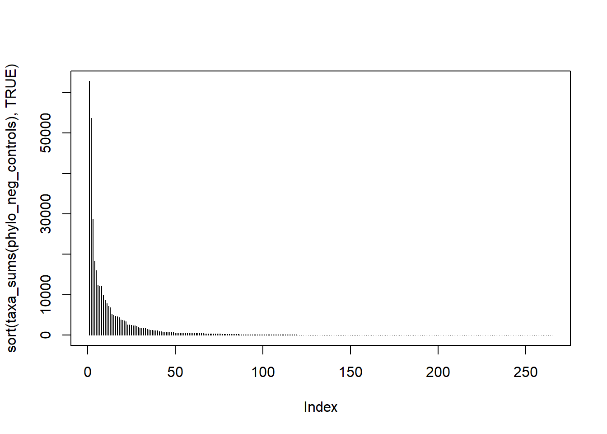
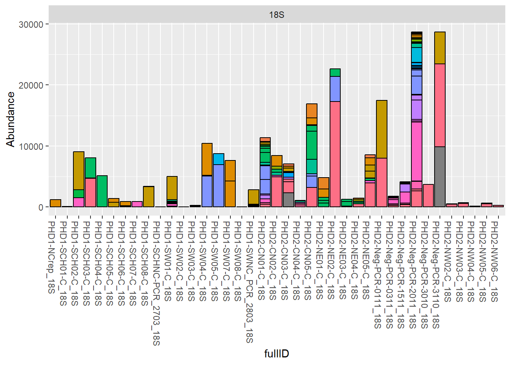
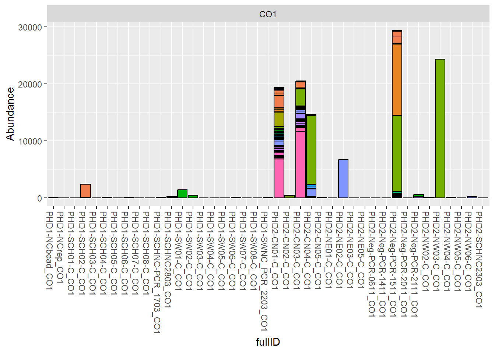
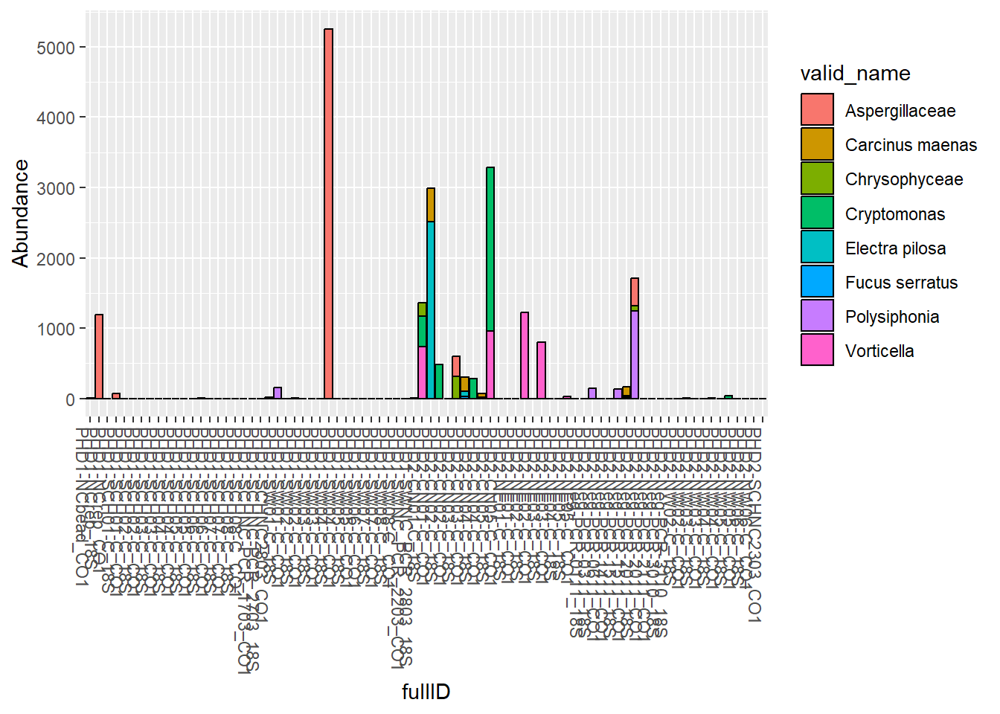
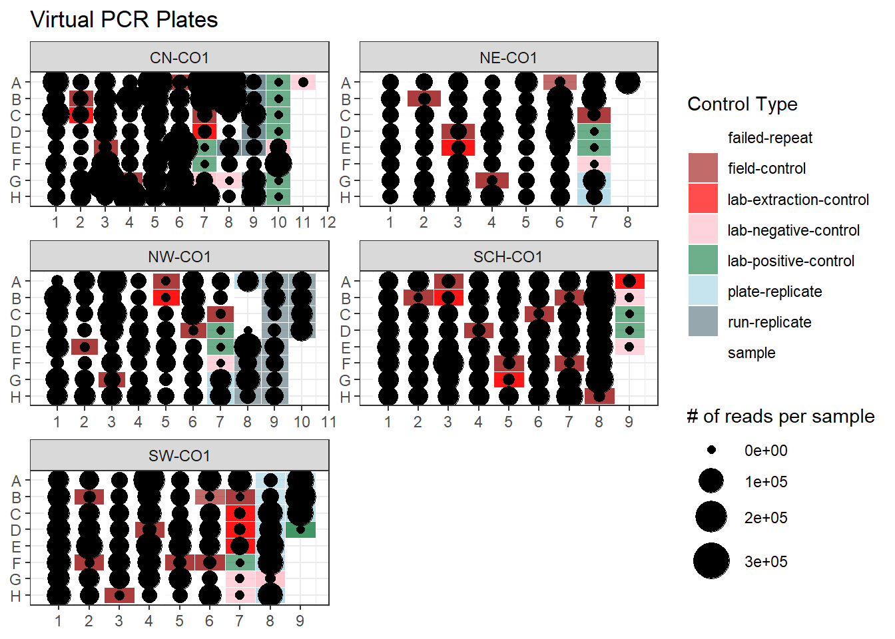
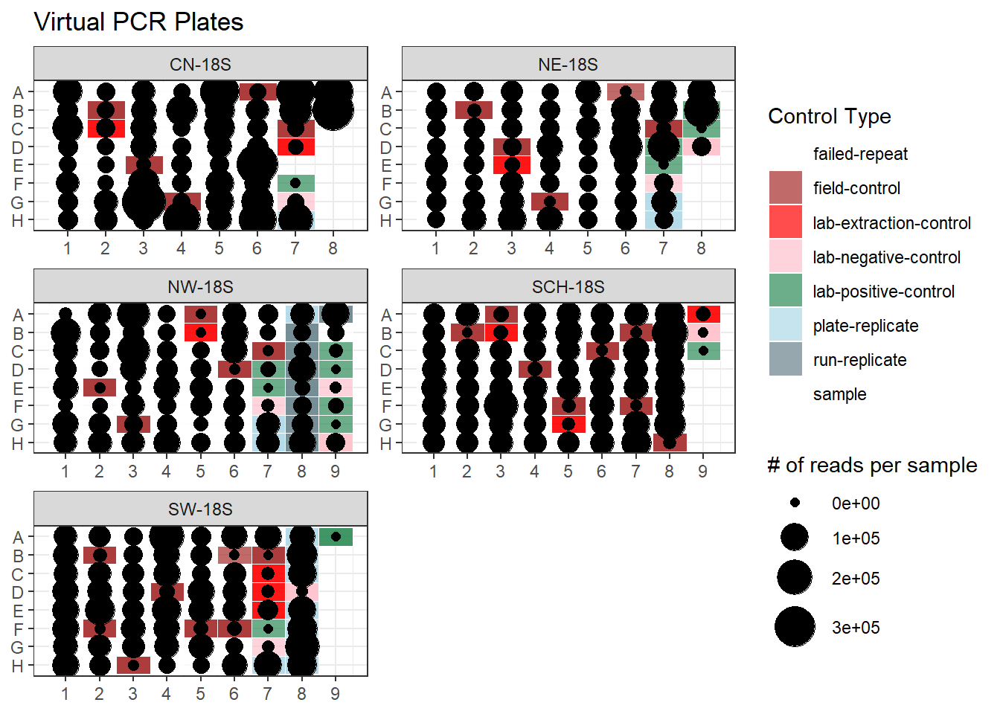
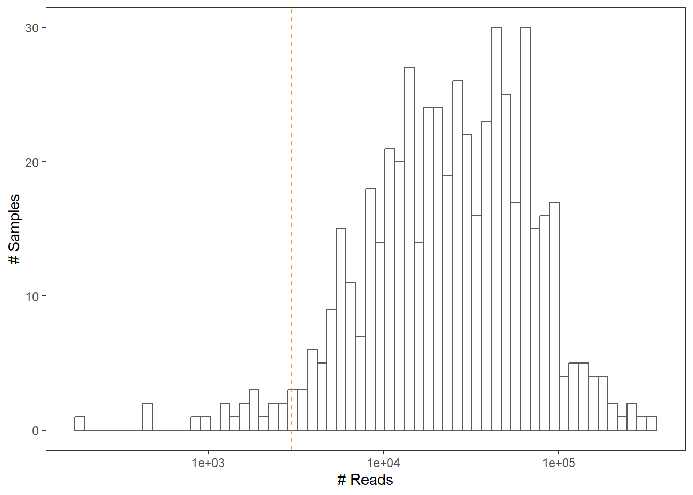

list.of.packages <- c("dplyr",
"tidyverse",
"phyloseq",
"seqinr",
"dada2",
"sjmisc",
"worrms",
"taxize",
"tibble",
"taxadb",
"reshape2",
"decontam",
"microViz",
"cowplot",
"devtools",
"qiime2R",
"microbiome",
"vegan",
"ggforce",
"ANCOMBC")
new.packages <- list.of.packages[!(list.of.packages %in% installed.packages()[,"Package"])]
if(length(new.packages)) install.packages(new.packages)
invisible(lapply(list.of.packages, library, character.only = TRUE))Formatting and quality control of eDNA metabarcoding data (intertidal dataset)
Load packages
Importing data
We’ll first load all the required data, including outputs from the taxonomic assignment (.txt files), ASV data (.tsv and .fasta) and metadata (.csv).
Taxonomic assignments
We BLASTed ASVs against curated databases (MIDORI2 for CO1, Silva for 18S) separately for five regions: Scotland, North and South Wales, Northeast England, and Southwest England.
The BLAST results were then processed using MEtaGenome ANalyzer (MEGAN), which parses the alignments and assigns taxonomy using the Lowest Common Ancestor (LCA) algorithm. This approach ensures accurate taxonomic classification by considering multiple hits while conservatively resolving ambiguous assignments.
#Scotland----
SCH_18S_taxa<- read.table("Input_Data/MEGAN_data/SCH_18S_ASVs_blast_out_SILVA_98-ex.txt", header = F) #Scotland 18S
colnames(SCH_18S_taxa)<- c("ASV", "taxonomy")
SCH_CO1_taxa<- read.table("Input_Data/MEGAN_data/SCH_CO1_ASVs_blast_UNIQ_MIDORI_98-ex.txt", header = F) #Scotland CO1
colnames(SCH_CO1_taxa)<- c("ASV", "taxonomy")
#North wales----
NW_18S_taxa<- read.table("Input_Data/MEGAN_data/NW_18S_ASVs_blast_out_SILVA_98-ex.txt", header = F) #North Wales 18S
colnames(NW_18S_taxa)<- c("ASV", "taxonomy")
NW_CO1_taxa<- read.table("Input_Data/MEGAN_data/NW_CO1_ASVs_blast_UNIQ_MIDORI_98-ex_1per.txt", header = F) #North Wales CO1
colnames(NW_CO1_taxa)<- c("ASV", "taxonomy")
#South Wales----
SW_18S_taxa<- read.table("Input_Data/MEGAN_data/SW_18S_ASVs_blast_out_SILVA_98-ex.txt", header = F) #South Wales 18S
colnames(SW_18S_taxa)<- c("ASV", "taxonomy")
SW_CO1_taxa<- read.table("Input_Data/MEGAN_data/SW_CO1_ASVs_blast_UNIQ_MIDORI_98-ex.txt", header = F) #South Wales CO1
colnames(SW_CO1_taxa)<- c("ASV", "taxonomy")
#Northeast England----
NE_18S_taxa<- read.table("Input_Data/MEGAN_data/NE_18S_ASVs_blast_out_SILVA_98-ex.txt", header = F) #Northeast 18S
colnames(NE_18S_taxa)<- c("ASV", "taxonomy")
NE_CO1_taxa<- read.table("Input_Data/MEGAN_data/NE_CO1_ASVs_blast_UNIQ_MIDORI_98-ex.txt", header = F) #Northwast CO1
colnames(NE_CO1_taxa)<- c("ASV", "taxonomy")
#Southwest England (Cornwall)----
CN_18S_taxa<- read.table("Input_Data/MEGAN_data/CN_18S_ASVs_blast_out_SILVA-1per_98.txt", header = F) #Cornwall 18S
colnames(CN_18S_taxa)<- c("ASV", "taxonomy")
CN_CO1_taxa<- read.table("Input_Data/MEGAN_data/CN_CO1_ASVs_blast_UNIQ_MIDORI-1per_98.txt", header = F) #Cornwall CO1
colnames(CN_CO1_taxa)<- c("ASV", "taxonomy")
#Controls----
Controls_18S_taxa<- read.table("Input_Data/MEGAN_data/Controls_reps_18S_ASVs_blast_out_SILVA_98-ex.txt", header = F) #Controls 18S
colnames(Controls_18S_taxa)<- c("ASV", "taxonomy")
Controls_CO1_taxa<- read.table("Input_Data/MEGAN_data/Repeats_CO1_ASVs_blast_UNIQ_MIDORI_98-ex.txt", header = F) #Controls CO1
colnames(Controls_CO1_taxa)<- c("ASV", "taxonomy")Let’s take a look at one of the MEGAN outputs. This file shows the ASVs detected in Scotland derived from the CO1 gene.
head(SCH_CO1_taxa) ASV taxonomy
1 ASV_820 Paramoeba pemaquidensis
2 ASV_18576 Vexillifera kereti
3 ASV_22679 Vexillifera kereti
4 ASV_280 Parvamoeba rugata
5 ASV_10580 Parvamoeba rugata
6 ASV_20723 Parvamoeba rugataASV data
Now we import the ASV count and sequence information for each region, obtained using DADA2. We have to do a bit of wrangling to get the fasta file into the correct format.
#Scotland----
SCH_asv_count_18S <- read.table("Input_Data/HPC_processed_data/SCH_18S/06_ASV_counts_SCH_18S.tsv") #Scotland 18S counts
SCH_asv_fasta_18S <- read.fasta("Input_Data/HPC_processed_data/SCH_18S/06_ASV_seqs_SCH_18S.fasta")#Scotland 18S fasta
SCH_asv_fasta_18S_df <- data.frame(ASV=names(SCH_asv_fasta_18S),
Seqs=unlist(getSequence(SCH_asv_fasta_18S, as.string=T))) #turn into data frame
SCH_asv_fasta_18S_df$Seqs<- toupper(SCH_asv_fasta_18S_df$Seqs) #upper case Seqs
SCH_asv_count_CO1 <- read.table("Input_Data/HPC_processed_data/SCH_COI/06_ASV_counts_SCH_CO1_names.tsv") #Scotland CO1S counts
SCH_asv_fasta_CO1 <- read.fasta("Input_Data/HPC_processed_data/SCH_COI/06_ASV_seqs_SCH_CO1_names.fasta")#Scotland CO1 fasta
SCH_asv_fasta_CO1_df <- data.frame(ASV=names(SCH_asv_fasta_CO1),
Seqs=unlist(getSequence(SCH_asv_fasta_CO1, as.string=T))) #turn into data frame
SCH_asv_fasta_CO1_df$Seqs<- toupper(SCH_asv_fasta_CO1_df$Seqs) #upper case Seqs
#North Wales----
NW_asv_count_18S <- read.table("Input_Data/HPC_processed_data/NW_18S/06_ASV_counts.tsv") #North Wales 18S counts
NW_asv_fasta_18S <- read.fasta("Input_Data/HPC_processed_data/NW_18S/06_ASV_seqs.fasta")#North Wales 18S fasta
NW_asv_fasta_18S_df <- data.frame(ASV=names(NW_asv_fasta_18S),
Seqs=unlist(getSequence(NW_asv_fasta_18S, as.string=T))) #turn into data frame
NW_asv_fasta_18S_df$Seqs<- toupper(NW_asv_fasta_18S_df$Seqs) #upper case Seqs
NW_asv_count_CO1 <- read.table("Input_Data/HPC_processed_data/NW_CO1/06_ASV_counts.tsv") #North Wales CO1 counts
NW_asv_fasta_CO1 <- read.fasta("Input_Data/HPC_processed_data/NW_CO1/06_ASV_seqs.fasta")#North Wales CO1 fasta
NW_asv_fasta_CO1_df <- data.frame(ASV=names(NW_asv_fasta_CO1),
Seqs=unlist(getSequence(NW_asv_fasta_CO1, as.string=T))) #turn into data frame
NW_asv_fasta_CO1_df$Seqs<- toupper(NW_asv_fasta_CO1_df$Seqs) #upper case Seqs
#South Wales----
SW_asv_count_18S <- read.table("Input_Data/HPC_processed_data/SW_18S/06_ASV_counts_SW_18S.tsv") #South Wales 18S counts
SW_asv_fasta_18S <- read.fasta("Input_Data/HPC_processed_data/SW_18S/06_ASV_seqs_SW_18S.fasta") #South Wales 18S fasta
SW_asv_fasta_18S_df <- data.frame(ASV=names(SW_asv_fasta_18S),
Seqs=unlist(getSequence(SW_asv_fasta_18S, as.string=T))) #turn into data frame
SW_asv_fasta_18S_df$Seqs<- toupper(SW_asv_fasta_18S_df$Seqs) #upper case Seqs
SW_asv_count_CO1 <- read.table("Input_Data/HPC_processed_data/SW_CO1/06_ASV_counts_SW_CO1_names.tsv") #South Wales CO1 counts
SW_asv_fasta_CO1 <- read.fasta("Input_Data/HPC_processed_data/SW_CO1/06_ASV_seqs_SW_CO1_names.fasta") #South Wales CO1 fasta
SW_asv_fasta_CO1_df <- data.frame(ASV=names(SW_asv_fasta_CO1),
Seqs=unlist(getSequence(SW_asv_fasta_CO1, as.string=T))) #turn into data frame
SW_asv_fasta_CO1_df$Seqs<- toupper(SW_asv_fasta_CO1_df$Seqs) #upper case Seqs
#Northeast----
NE_asv_count_18S <- read.table("Input_Data/HPC_processed_data/NE_18S/06_ASV_counts_NE.tsv") #Northeast 18S counts
NE_asv_fasta_18S <- read.fasta("Input_Data/HPC_processed_data/NE_18S/06_ASV_seqs_NE.fasta")#Northeast 18S fasta
NE_asv_fasta_18S_df <- data.frame(ASV=names(NE_asv_fasta_18S),
Seqs=unlist(getSequence(NE_asv_fasta_18S, as.string=T))) #turn into data frame
NE_asv_fasta_18S_df$Seqs<- toupper(NE_asv_fasta_18S_df$Seqs) #upper case Seqs
NE_asv_count_CO1 <- read.table("Input_Data/HPC_processed_data/NE_CO1/06_ASV_counts.tsv") #Northeast CO1 counts
NE_asv_fasta_CO1 <- read.fasta("Input_Data/HPC_processed_data/NE_CO1/06_ASV_seqs.fasta")#Northeast CO1 fasta
NE_asv_fasta_CO1_df <- data.frame(ASV=names(NE_asv_fasta_CO1),
Seqs=unlist(getSequence(NE_asv_fasta_CO1, as.string=T))) #turn into data frame
NE_asv_fasta_CO1_df$Seqs<- toupper(NE_asv_fasta_CO1_df$Seqs) #upper case Seqs
#Cornwall----
CN_asv_count_18S <- read.table("Input_Data/HPC_processed_data/CN_18S/06_ASV_counts.tsv") #Cornwall 18S counts
CN_asv_fasta_18S <- read.fasta("Input_Data/HPC_processed_data/CN_18S/06_ASV_seqs.fasta")#Cornwall 18S fasta
CN_asv_fasta_18S_df <- data.frame(ASV=names(CN_asv_fasta_18S),
Seqs=unlist(getSequence(CN_asv_fasta_18S, as.string=T))) #turn into data frame
CN_asv_fasta_18S_df$Seqs<- toupper(CN_asv_fasta_18S_df$Seqs) #upper case Seqs
CN_asv_count_CO1 <- read.table("Input_Data/HPC_processed_data/CN_CO1/06_ASV_counts.tsv") #Cornwall CO1 counts
CN_asv_fasta_CO1 <- read.fasta("Input_Data/HPC_processed_data/CN_CO1/06_ASV_seqs.fasta")#Cornwall CO1 fasta
CN_asv_fasta_CO1_df <- data.frame(ASV=names(CN_asv_fasta_CO1),
Seqs=unlist(getSequence(CN_asv_fasta_CO1, as.string=T))) #turn into data frame
CN_asv_fasta_CO1_df$Seqs<- toupper(CN_asv_fasta_CO1_df$Seqs) #upper case Seqs
#Controls
controls_PhD2_asv_count_18S <- read.table("Input_Data/HPC_processed_data/Controls_18S/06_ASV_counts_Controls.tsv") #controls 18S counts
controls_PhD2_asv_fasta_18S <- read.fasta("Input_Data/HPC_processed_data/Controls_18S/06_ASV_seqs_Controls.fasta")#controls 18S fasta
controls_PhD2_asv_fasta_18S_df <- data.frame(ASV=names(controls_PhD2_asv_fasta_18S),
Seqs=unlist(getSequence(controls_PhD2_asv_fasta_18S, as.string=T))) #turn into data frame
controls_PhD2_asv_fasta_18S_df$Seqs<- toupper(controls_PhD2_asv_fasta_18S_df$Seqs) #upper case Seqs
controls_PhD2_asv_count_CO1 <- read.table("Input_Data/HPC_processed_data/Repeats_CO1/06_ASV_counts.tsv") #controls CO1 counts
controls_PhD2_asv_fasta_CO1 <- read.fasta("Input_Data/HPC_processed_data/Repeats_CO1/06_ASV_seqs.fasta")#controls CO1 fasta
controls_PhD2_asv_fasta_CO1_df <- data.frame(ASV=names(controls_PhD2_asv_fasta_CO1),
Seqs=unlist(getSequence(controls_PhD2_asv_fasta_CO1, as.string=T))) #turn into data frame
controls_PhD2_asv_fasta_CO1_df$Seqs<- toupper(controls_PhD2_asv_fasta_CO1_df$Seqs) #upper case SeqsLet’s take a look at an example of the two imported ASV files. Again, these shows the ASVs detected in Scotland derived from the CO1 gene.
str(SCH_asv_count_CO1) #counts'data.frame': 25524 obs. of 69 variables:
$ Adapter3616.SCH01.04rep: int 4093 1277 1446 285 247 8426 200 1132 74 76 ...
$ Adapter3618.SCH04.09rep: int 6540 0 4951 13980 0 25 124 1022 141 31 ...
$ Adapter3619.SCH07.02rep: int 4514 5476 44 0 7098 37 0 1062 0 2265 ...
$ Adapter385.SCH01.01 : int 14226 34 0 3645 55 14877 72 3995 0 0 ...
$ Adapter386.SCH01.02 : int 17167 97 57 128 29 11294 34 3222 0 0 ...
$ Adapter387.SCH01.03 : int 11759 13 0 65 19 12901 0 2801 0 0 ...
$ Adapter388.SCH01.04 : int 7043 1235 2119 409 116 10103 265 1971 212 99 ...
$ Adapter389.SCH01.05 : int 6969 149 220 0 12746 8130 14 1907 0 0 ...
$ Adapter390.SCH01.06 : int 1595 54 41322 2382 480 3344 25 578 0 0 ...
$ Adapter391.SCH01.07 : int 5347 31 444 553 9 14428 4346 1909 0 82 ...
$ Adapter392.SCH01.08 : int 3505 202 113 1132 9 17493 10475 1000 0 74 ...
$ Adapter393.SCH01.09 : int 4292 57 152 1186 0 8626 3700 957 0 83 ...
$ Adapter394.SCH01.C : int 0 8 0 0 0 0 0 0 0 0 ...
$ Adapter395.SCH02.01 : int 11959 62 120 715 0 392 1396 1826 0 98 ...
$ Adapter396.SCH02.02 : int 2087 16 0 131 0 48 537 386 8 52 ...
$ Adapter398.SCH02.04 : int 38 0 0 1782 0 0 0 0 56662 0 ...
$ Adapter400.SCH02.06 : int 602 0 0 8866 0 40 0 162 24149 0 ...
$ Adapter401.SCH02.C : int 14 0 0 12 0 22 0 5 10 0 ...
$ Adapter402.SCHNC1ex : int 0 0 0 0 0 0 0 0 4 0 ...
$ Adapter403.SCH03.01 : int 18895 304 5239 1427 75 417 470 3982 40 10 ...
$ Adapter404.SCH03.02 : int 7478 22 3145 2473 34 185 13917 1091 0 0 ...
$ Adapter405.SCH03.03 : int 17104 892 1097 250 19 725 569 3290 0 0 ...
$ Adapter406.SCH03.04 : int 15268 24 2484 947 18 418 7 2957 259 0 ...
$ Adapter407.SCH03.05 : int 7185 0 4943 2569 40 298 896 1131 673 0 ...
$ Adapter408.SCH03.06 : int 13432 48 2614 572 59 633 241 2778 59 7 ...
$ Adapter409.SCH03.07 : int 13391 63 91 70 52 1427 252 2817 0 197 ...
$ Adapter410.SCH03.08 : int 15437 21 42 0 11 339 17 3480 0 56 ...
$ Adapter411.SCH03.09 : int 11703 64 246 340 76 1711 242 2267 0 295 ...
$ Adapter412.SCH03.C : int 9 0 0 0 0 0 0 0 0 0 ...
$ Adapter413.SCH04.01 : int 21451 6 247 99 43 221 2253 3042 0 299 ...
$ Adapter414.SCH04.02 : int 37259 15 448 87 28561 340 7067 4422 0 226 ...
$ Adapter416.SCH04.04 : int 46854 1890 2082 245 0 14 11 8926 0 0 ...
$ Adapter417.SCH04.05 : int 26878 84 4754 5350 58 416 30879 4635 0 62 ...
$ Adapter418.SCH04.06 : int 20521 6672 1237 0 1141 654 284 3087 0 161 ...
$ Adapter419.SCH04.07 : int 5368 0 417 6578 0 0 0 778 0 5 ...
$ Adapter420.SCH04.08 : int 10112 8 7201 11499 0 6 993 1698 81 68 ...
$ Adapter421.SCH04.09 : int 10247 0 6344 18824 0 184 309 1865 382 132 ...
$ Adapter422.SCH04.C : int 45 0 9 0 21 0 9 13 10 0 ...
$ Adapter423.SCHNC2ex : int 48 0 10 0 23 9 0 5 0 0 ...
$ Adapter424.SCH05.01 : int 11751 2887 69 91 131 455 117 2468 0 2658 ...
$ Adapter425.SCH05.02 : int 8230 1134 57 0 77 272 33 1500 0 1177 ...
$ Adapter426.SCH05.03 : int 10757 97 0 8 0 15 0 1994 0 116 ...
$ Adapter427.SCH05.C : int 0 0 0 0 0 0 0 0 0 0 ...
$ Adapter428.SCH06.01 : int 6952 526 9164 238 3594 28 1040 942 0 1649 ...
$ Adapter429.SCH06.02 : int 10309 26677 40 0 1339 30 969 1732 0 6878 ...
$ Adapter430.SCH06.03 : int 6651 2433 92 0 25632 25 1550 972 0 6207 ...
$ Adapter431.SCH06.04 : int 8922 14828 25 0 3810 42 77 1228 0 4183 ...
$ Adapter432.SCH06.05 : int 5348 9687 17 0 2432 35 36 960 0 3236 ...
$ Adapter433.SCH06.06 : int 9116 11166 8 0 3847 68 64 1360 0 7572 ...
$ Adapter434.SCH06.C : int 12 5 0 0 4 0 0 0 0 0 ...
$ Adapter435.SCH07.01 : int 8558 23342 609 0 24425 61 117 1565 0 10786 ...
$ Adapter436.SCH07.02 : int 11804 10739 138 0 14036 61 0 3911 0 4291 ...
$ Adapter437.SCH07.03 : int 2289 2718 142 0 5587 24 106 528 0 6173 ...
$ Adapter438.SCH07.C : int 6 0 0 0 0 0 0 0 0 0 ...
$ Adapter439.SCH08.01 : int 10664 77000 117 0 3881 222 92 2333 0 0 ...
$ Adapter440.SCH08.02 : int 4825 60236 0 0 3213 49 0 775 0 0 ...
$ Adapter441.SCH08.03 : int 2271 40980 38 0 2888 54 0 513 0 0 ...
$ Adapter442.SCH08.04 : int 159 36 15855 12775 42 3 7671 57 0 0 ...
$ Adapter443.SCH08.05 : int 15650 17873 38455 9310 460 61 2396 2530 0 0 ...
$ Adapter444.SCH08.06 : int 11373 195 40361 818 17 58 213 2263 17 0 ...
$ Adapter445.SCH08.07 : int 21058 66 6206 15798 11 178 19735 5069 1045 0 ...
$ Adapter446.SCH08.08 : int 149 20 1213 37507 6 5 1803 59 924 0 ...
$ Adapter447.SCH08.09 : int 21 0 0 453 0 0 0 0 25 0 ...
$ Adapter448.SCH08.C : int 0 0 0 0 0 0 0 0 4 0 ...
$ Adapter449.SCHNC3ex : int 31 296 0 0 45 0 0 9 0 0 ...
$ Adapter450.SCHNCPCR : int 0 0 105 0 0 0 51 0 0 0 ...
$ Adapter451.SCHPC : int 0 0 0 0 0 0 0 0 0 0 ...
$ Adapter452.SCHPC2803 : int 0 0 0 0 0 0 0 0 0 0 ...
$ Adapter453.SCHNC2803 : int 95 0 26 53 0 0 91 24 0 0 ...head(SCH_asv_fasta_CO1_df) #sequences ASV
1 ASV_1
2 ASV_2
3 ASV_3
4 ASV_4
5 ASV_5
6 ASV_6
Seqs
1 ACTAAGTCATATTACTAGTCACTCAGGAGGTGCTGTAGATTTAGCTATTTTTAGTTTACACGTTTCAGGTGCAAGTAGTATTTTAGGTGCAATCAACTTTATTACTACCATCTTTAATATGCGTGGACCTGGATTATTAATGCATCGCTTACCTTTATTTGTATGGAGTGTTTTAATTACAGCGTTTTTACTTCTTCTCTCATTACCTGTACTTGCAGGTGCAATTACAATGTTACTAACTGATCGAAACTTTTCAACCAGTTTCTTTGACCCAAGTGGTGGAGGAGACCCTATTTTATATCAACATTTATTC
2 CCTTAGTGGTATTCAGGCTCACTCGGGGCCTTCTGTTGATTTAGCTATATTCAGTCTTCATCTCTCAGGTGCTGCTTCTATTTTAGGTGCTATAAATTTTATCACAACAATTTTTAATATGAGAGCTCCTGGTATGACAATGGATAGAGTACCTCTTTTTGTATGGTCTGTCTTAATCACAGCGTTTTTGTTACTGTTATCGCTTCCTGTTTTGGCAGGTGGTATTACAATGTTATTGACAGATCGTAACTTTAATACTACTTTCTTTGATCCGGCAGGTGGTGGTGATCCAGTATTGTATCAGCATTTATTT
3 ATTAAGCACTTCTTTCCTCAGTTTATCACCTTCAAGTACAGCTTTCATAGTCTTTGGATTATTAATGTCAGGTATATCCTCATCTCTCACATCTGTAAACTTTTGGACAACAATTATAAACATGAGATCTTATTATCTGACAATGAAGACTATGCCATTATTCCCTTGGAGCCTTTTGATAACTTCTGGAATGCTTTTATTAACATTACCAATCTTATCAGGAGCTCTTCTAATGGTCTTGGGTGATCTTCATTCTAATACACTTTTCTTTGATCCAATCTTTGGAGGAGATCCTATATTCTATCAACACTTATTT
4 ATTAAGCACTTCTTTCCTCAGTTTATCACCTTCAAGTACAGCTTTCATAGTCTTTGGATTATTAATGTCAGGTATATCCTCATCTCTCACATCTGTAAACTTTTGGACAACAATTATAAACATGAGATCTTATTATCTGACAATGAAGACTATGCCATTATTCCCTTGGAGCCTTTTGATAACTTCTGGAATGCTTTTATTAACATTACCAATCTTATCAGGAGCTCTTCTAATGGTCTTCGGTGATCTTCATTCTAATACACTTTTCTTTGATCCAATCTTTGGAGGAGATCCTATATTCTATCAACACTTATTT
5 ATTAAGTGGTATTCAAGCACACTCAGGGCCTTCAGTTGATTTAGCTATTTTTAGTTTACATTTATCTGGAGCGGCTTCAATTTTAGGAGCTATTAACTTTATTACTACAATCTTTAATATGCGTGCTCCTGGTATGACTATGGATAGATTACCTCTTTTTGTTTGGTCTGTTTTAATAACAGCATTCTTACTTTTATTATCCCTTCCTGTTTTAGCTGGTGGTATTACAATGCTTTTAACAGATAGAAATTTTAATACTACTTTTTTTGACCCTGCTGGTGGTGGTGATCCTGTATTATACCAACACTTATTT
6 ATTAAGTATTTTGGAACAAGCTATACCTGGATCGGGACTTGGAATGACTTTGTGGTTATTAAGTATGACACTGTTTATAGCTTCCTCATTAATTGGGGCGCTTAATTACATTGTTACAATTATTAACTTAAGAACCATTGGAATGAAAATGACAAGATTGCCACTTACTATTTGGGCATTCTTTGTAACTGCAATTTTAGGTGTACTTTCTTTTCCAGTATTAGTATCAGCAGTATTGTTGTTATTAATGGATAAGACTTTTGGAACAAGTTTCTACTTGTCTGATATCTTTATTGGAGGAGAAGCATTAGATGCATCTGGAGGTTCACCAATATTATACCAACATTTATTTMetadata
Finally, let’s import any metadata associated to our samples.
sites <- read.csv("Input_Data/Metadata/eDNA_Site_Rockpool_Data_Oct2023.csv", na.strings=c("","NA"))
IDs_stageone <- read.csv("Input_Data/Metadata/sample_ID_matching_stageone.csv")
IDs_stagetwo <- read.csv("Input_Data/Metadata/sample_ID_matching_stagetwo.csv")And let’s take a quick look at the metadata files too. You can see there are 63 variables which are associated to our samples.
str(sites)'data.frame': 374 obs. of 63 variables:
$ eventID : chr "PHD1-2023.03.23-Neg-bead" "PHD1-2023.03.29-Neg-PCRrep" "PHD1-2023.03.29-Pos-PCRrep" "PHD1-2022.06.12-SCH01-01" ...
$ fieldID : chr "PHD1-NCbead" "PHD1-NCrep" "PHD1-PCrep" "PHD1-SCH01-01" ...
$ projectID : chr "PHD1" "PHD1" "PHD1" "PHD1" ...
$ localityID : chr NA NA NA "SCH01" ...
$ sampleID : chr NA NA NA "1" ...
$ sampleType : chr "lab-negative-control" "lab-negative-control" "lab-positive-control" "sample" ...
$ controlCheck : chr "control" "control" "positive" "sample" ...
$ negCheckLogical : logi TRUE TRUE FALSE FALSE FALSE FALSE ...
$ pairedRepLogical : logi FALSE FALSE FALSE FALSE FALSE FALSE ...
$ batch_extraction : int NA NA NA 1 1 1 1 1 1 1 ...
$ batch_PCR_CO1 : int 1 1 1 2 2 2 2 1 2 2 ...
$ plate_col_CO1 : int 7 8 9 1 1 1 1 8 1 1 ...
$ plate_row_CO1 : chr "H" "G" "D" "A" ...
$ batch_PCR_18S : int NA 3 3 4 4 4 4 3 4 4 ...
$ plate_col_18S : int NA 8 9 1 1 1 1 8 1 1 ...
$ plate_row_18S : chr NA "D" "A" "A" ...
$ date_extraction : chr NA NA NA "24.02.2023" ...
$ date_amplified_CO1 : chr "22.03.2023" "29.03.2023" "29.03.2023" "28.03.2023" ...
$ date_amplified_18S : chr NA "29.03.2023" "29.03.2023" "27.03.2023" ...
$ sample_18S : chr NA "S60" "S65" "S66" ...
$ sample_CO1 : chr "Adapter3608.NCbead" "Adapter3615.NCPCRrep" "Adapter3620.PCrep" "Adapter385.SCH01.01" ...
$ COUNT : int 1 2 2 2 2 2 2 2 2 2 ...
$ dna_concentration_CO1: num 4.63 28.76 73.22 82.54 70.27 ...
$ dna_concentration_18S: num NA 46.3 81.6 55.4 37 ...
$ continent : chr NA NA NA "Europe" ...
$ country : chr NA NA NA "Scotland" ...
$ county : chr NA NA NA "Sutherland" ...
$ waterBody : chr NA NA NA "rocky" ...
$ verbatimLocality : chr NA NA NA "Scourie" ...
$ exposure : chr NA NA NA "Exposed" ...
$ weather : chr NA NA NA "moderate rain, strong winds, very cloudy" ...
$ tide : chr NA NA NA "outgoing" ...
$ lowWater : chr NA NA NA "12:23" ...
$ decimalLongitude : num NA NA NA -5.17 -5.17 ...
$ decimalLatitude : num NA NA NA 58.4 58.4 ...
$ recordedBy : chr NA NA NA "Dina-Leigh Simons; Nova Mieszkowska" ...
$ year : int NA NA NA 2022 2022 2022 2022 2022 2022 2022 ...
$ month : int NA NA NA 6 6 6 6 6 6 6 ...
$ day : int NA NA NA 12 12 12 12 12 12 12 ...
$ eventTime : chr NA NA NA "09:31" ...
$ samplingProtocol : chr NA NA NA "Sterivex-0.22" ...
$ pumpType : chr NA NA NA "Syringe 60mL, sealant gun" ...
$ repVol..mL. : int NA NA NA 1000 1000 800 1000 1000 1000 1000 ...
$ algaeCover. : int NA NA NA 0 5 60 90 90 90 95 ...
$ remarks : chr NA NA NA "Filtered on shore" ...
$ daysBeforefreeze : int NA NA NA 9 9 9 9 9 9 9 ...
$ preservation : chr NA NA NA "EtOH" ...
$ type : chr NA NA NA "Rockpool" ...
$ shorePosition : chr NA NA NA "High" ...
$ rockpoolarea.cm.2. : num NA NA NA 7443 23218 ...
$ depth1 : num NA NA NA NA NA NA NA NA NA NA ...
$ depth2 : num NA NA NA NA NA NA NA NA NA NA ...
$ averageDepth..cm. : num NA NA NA 25 19.1 13.9 1100 1100 24.7 25.6 ...
$ rockpoolVol.m.3. : num NA NA NA 0.186 0.444 ...
$ pH1 : num NA NA NA NA NA NA NA NA NA NA ...
$ pH2 : num NA NA NA NA NA NA NA NA NA NA ...
$ averagePH : num NA NA NA 8.59 8.78 8.47 8.63 8.63 9.54 8.84 ...
$ temp1 : chr NA NA NA NA ...
$ temp2 : chr NA NA NA NA ...
$ averageTemp : num NA NA NA 13 13.6 ...
$ siteImage : chr NA NA NA "IMG_SCH01-01.jpeg" ...
$ rockType : chr NA NA NA "metamorphic" ...
$ rockFold : chr NA NA NA NA ...We also have some data to help tidy up sample IDs later in the pipeline.
head(IDs_stageone) #labels sample_ID sample_18S sample_CO1
1 PHD1-SCHNC-PCR_1703 <NA> Adapter450.SCHNCPCR
2 PHD1-SCHPC_1703 <NA> Adapter451.SCHPC
3 PHD1-SCHNC2803 <NA> Adapter453.SCHNC2803
4 PHD1-SCHPC2803 <NA> Adapter452.SCHPC2803
5 PHD1-NCbead <NA> Adapter3608.NCbead
6 PHD1-SWNC_PCR_2203 <NA> Adapter3607.SWNCPCRData wrangling to create a single data set
We have lots of different files here which need to be manipulated into one single data frame for each primer. A few steps are required to achieve this.
Merge taxonomic assignments and ASV information
#Scotland----
SCH_asv_18S_merged <- merge(SCH_asv_fasta_18S_df, SCH_asv_count_18S, by.x = "Seqs", by.y = "row.names") #add ASVs to count data
SCH_taxa_18S <- full_join(SCH_18S_taxa, SCH_asv_18S_merged, by = "ASV") #full_join keeps ASVs which didn't get assigned, left_join would remove unassigned
SCH_asv_CO1_merged <- merge(SCH_asv_fasta_CO1_df, SCH_asv_count_CO1, by.x = "Seqs", by.y = "row.names") #add ASVs to count data
SCH_taxa_CO1 <- full_join(SCH_CO1_taxa, SCH_asv_CO1_merged, by = "ASV") #full_join keeps ASVs which didn't get assigned, left_join would remove unassigned
#North Wales----
NW_asv_18S_merged <- merge(NW_asv_fasta_18S_df, NW_asv_count_18S, by.x = "Seqs", by.y = "row.names") #add ASVs to count data
NW_taxa_18S <- full_join(NW_18S_taxa, NW_asv_18S_merged, by = "ASV") #full_join keeps ASVs which didn't get assigned, left_join would remove unassigned
NW_asv_CO1_merged <- merge(NW_asv_fasta_CO1_df, NW_asv_count_CO1, by.x = "Seqs", by.y = "row.names") #add ASVs to count data
NW_taxa_CO1 <- full_join(NW_CO1_taxa, NW_asv_CO1_merged, by = "ASV") #full_join keeps ASVs which didn't get assigned, left_join would remove unassigned
#South Wales----
SW_asv_18S_merged <- merge(SW_asv_fasta_18S_df, SW_asv_count_18S, by.x = "Seqs", by.y = "row.names") #add ASVs to count data
SW_taxa_18S <- full_join(SW_18S_taxa, SW_asv_18S_merged, by = "ASV") #full_join keeps ASVs which didn't get assigned, left_join would remove unassigned
SW_asv_CO1_merged <- merge(SW_asv_fasta_CO1_df, SW_asv_count_CO1, by.x = "Seqs", by.y = "row.names") #add ASVs to count data
SW_taxa_CO1 <- full_join(SW_CO1_taxa, SW_asv_CO1_merged, by = "ASV") #full_join keeps ASVs which didn't get assigned, left_join would remove unassigned
#Northeast----
NE_asv_18S_merged <- merge(NE_asv_fasta_18S_df, NE_asv_count_18S, by.x = "Seqs", by.y = "row.names") #add ASVs to count data
NE_taxa_18S <- full_join(NE_18S_taxa, NE_asv_18S_merged, by = "ASV") #full_join keeps ASVs which didn't get assigned, left_join would remove unassigned
NE_asv_CO1_merged <- merge(NE_asv_fasta_CO1_df, NE_asv_count_CO1, by.x = "Seqs", by.y = "row.names") #add ASVs to count data
NE_taxa_CO1 <- full_join(NE_CO1_taxa, NE_asv_CO1_merged, by = "ASV") #full_join keeps ASVs which didn't get assigned, left_join would remove unassigned
#Cornwall----
CN_asv_18S_merged <- merge(CN_asv_fasta_18S_df, CN_asv_count_18S, by.x = "Seqs", by.y = "row.names") #add ASVs to count data
CN_taxa_18S <- full_join(CN_18S_taxa, CN_asv_18S_merged, by = "ASV") #full_join keeps ASVs which didn't get assigned, left_join would remove unassigned
CN_asv_CO1_merged <- merge(CN_asv_fasta_CO1_df, CN_asv_count_CO1, by.x = "Seqs", by.y = "row.names") #add ASVs to count data
CN_taxa_CO1 <- full_join(CN_CO1_taxa, CN_asv_CO1_merged, by = "ASV") #full_join keeps ASVs which didn't get assigned, left_join would remove unassigned
#Controls----
Controls_asv_18S_merged <- merge(controls_PhD2_asv_fasta_18S_df, controls_PhD2_asv_count_18S, by.x = "Seqs", by.y = "row.names") #add ASVs to count data
Controls_taxa_18S <- full_join(Controls_18S_taxa, Controls_asv_18S_merged, by = "ASV") #full_join keeps ASVs which didn't get assigned, left_join would remove unassigned
Controls_asv_CO1_merged <- merge(controls_PhD2_asv_fasta_CO1_df, controls_PhD2_asv_count_CO1, by.x = "Seqs", by.y = "row.names") #add ASVs to count data
Controls_taxa_CO1 <- full_join(Controls_CO1_taxa, Controls_asv_CO1_merged, by = "ASV") #full_join keeps ASVs which didn't get assigned, left_join would remove unassignedRemove undetermined sequences in 18S data
Sequences that were unable to be assigned to a specific sample in the 18S are stored under the variable ‘S0’. We want to remove those sequences from our data.
drop <- c("S0") # set which variable we want to remove (undetermined in MiniSeq run)
SCH_taxa_18S <- SCH_taxa_18S[,!(names(SCH_taxa_18S) %in% drop)]
NW_taxa_18S <- NW_taxa_18S[,!(names(NW_taxa_18S) %in% drop)]
SW_taxa_18S <- SW_taxa_18S[,!(names(SW_taxa_18S) %in% drop)]
NE_taxa_18S <- NE_taxa_18S[,!(names(NE_taxa_18S) %in% drop)]
CN_taxa_18S <- CN_taxa_18S[,!(names(CN_taxa_18S) %in% drop)]
Controls_taxa_18S <- Controls_taxa_18S[,!(names(Controls_taxa_18S) %in% drop)]Convert to long format
Here, we flip the data sets into a long format and add a region variable.
#Scotland----
flip_SCH_18S <- gather(SCH_taxa_18S, sample, reads, S66:S132)
flip_SCH_18S$region <- "Scotland"
flip_SCH_CO1 <- gather(SCH_taxa_CO1, sample, reads, Adapter3616.SCH01.04rep:Adapter453.SCHNC2803) #this is not number order, this is first and last column
flip_SCH_CO1$region <- "Scotland"
#North Wales----
flip_NW_18S <- gather(NW_taxa_18S, sample, reads, S1:S51)
flip_NW_18S$region <- "North Wales"
flip_NW_CO1 <- gather(NW_taxa_CO1, sample, reads, X1.NW01.01:X9.NW02.06) #this is not number order, this is first and last column
flip_NW_CO1$region <- "North Wales"
#South Wales----
flip_SW_18S <- gather(SW_taxa_18S, sample, reads, S60:S54)
flip_SW_18S$region <- "South Wales"
flip_SW_CO1 <- gather(SW_taxa_CO1, sample, reads, Adapter3553.SW01.01:Adapter3620.PCrep) #this is not number order, this is first and last column
flip_SW_CO1$region <- "South Wales"
#Northeast----
flip_NE_18S <- gather(NE_taxa_18S, sample, reads, S73:S123)
flip_NE_18S$region <- "Northeast England"
flip_NE_CO1 <- gather(NE_taxa_CO1, sample, reads, X100.NE05.02:X99.NE05.01) #this is not number order, this is first and last column
flip_NE_CO1$region <- "Northeast England"
#Cornwall----
flip_CN_18S <- gather(CN_taxa_18S, sample, reads, S133:S183)
flip_CN_18S$region <- "Cornwall"
flip_CN_CO1 <- gather(CN_taxa_CO1, sample, reads, X115.CN01.01:X192.CN01.02rep) #this is not number order, this is first and last column
flip_CN_CO1$region <- "Cornwall"
#Controls----
flip_controls_18S <- gather(Controls_taxa_18S, sample, reads, S34:S61) #this is not number order, this is first and last column
flip_controls_18S$region <- "Varied"
flip_controls_CO1 <- gather(Controls_taxa_CO1, sample, reads, X173.SCH02.03:X195.minusVEpcr) #this is not number order, this is first and last column
flip_controls_CO1$region <- "Varied"Let’s take a look at the long format for Scotland CO1. We now have a long format data set with ASVs, taxonomy, sequences, sample names, number of reads and region variables.
head(flip_SCH_CO1) ASV taxonomy
1 ASV_820 Paramoeba pemaquidensis
2 ASV_18576 Vexillifera kereti
3 ASV_22679 Vexillifera kereti
4 ASV_280 Parvamoeba rugata
5 ASV_10580 Parvamoeba rugata
6 ASV_20723 Parvamoeba rugata
Seqs
1 ATTATCTAGTGTAGTTGCACATTCAACTCCTTCCGTAGATTTAGCTATATTTAGTTTACATTTAGCAGGTATAGCATCAATTGCAGGATCTATTAATTATATTACAACTATTTTTAATATGAGAGTTGCTAAATATGATATGTTTAGATTACCTTTATTTATTTGAGGTATGCTTATTACTGCTTATTTATTAGTTTTTACTTTACCTGTTTTAGCTGGTGCTATCACTATGCTATTAACTGATAGAAATTTTAATACTTCTTTTTTTGATCCCGCTGGAGGTGGAGATCCTATACTATATCAACATTTATTT
2 ATTATCTAGTATAATTGCGCATTCTGGTGGTTCAGTAGATTTAGCTATTTTTAGTTTACATTTAGCAGGTATTTCGTCATTATTAGGTGCTATTAATTTTATTACAACTATTTTTAATATGAGAGCAAATAATTTTAGCATATATAAAATGCCTTTATTTGTTTGAGCAGTATTAATTACAGCTTTTTTATTATTATTATCATTACCTGTATTAGCAGGAGCTATTACTATGCTTTTAACTGATAGAAATTTTAATACTACTTTTTTTGACCCAGCAGGAGGTGGTGATCCTATATTGTATCAACATTTATTT
3 ATTATCTAGTATAATTGCGCATTCTGGTGGTTCAGTAGATTTAGCTATTTTTAGTTTACATTTAGCAGGTATTTCGTCATTATTAGGTGCTATTAATTTTATTACAACTATTTTTAATATGAGAGCAAATAATTTTAGTATATATAAAATGCCTTTATTTGTTTGAGCAGTATTAATTACAGCTTTTTTATTATTATTATCATTACCTGTATTAGCTGGAGCTATTACTATGCTTTTAACTGATAGAAATTTTAATACTACTTTTTTTGACCCAGCAGGAGGAGGTGATCCTATATTGTATCAACATTTATTT
4 TTTATCGGGTATAGAAGCGCATTCTGGTGGATCTGTAGATTTAGCAATTTTTAGTTTACATTTAGCAGGAGCATCTTCTTTATTAGGAGCAATAAATTTTATTACTACTGTCTTTAATATGAGAGCACCTAATTTAGAAATGCATAAATTACCTTTATTTGTATGAGCTATTTTAATTACAGCTTTTTTATTATTATTATCTTTACCTGTTTTAGCTGGTGCAATAACTATGCTTTTAACTGATCGTAATTTTAATACTACTTTTTTTGATCCAGCTGGTGGTGGTGATCCAATATTGTATCAGCATTTATTT
5 TTTATCTGGTATAGAAGCACATTCTGGTGGATCTGTAGATTTAGCAATTTTTAGTTTACATTTAGCAGGAGCATCTTCTTTATTAGGAGCAATAAATTTTATTACTACTGTTTTTAATATGAGAGCACCTAATTTAGAAATGCATAAATTACCTTTATTTGTTTGAGCTATTTTAATCACAGCTTTTTTATTATTATTATCTTTACCTGTTTTAGCTGGTGCAATAACTATGCTTTTAACTGATCGTAATTTTAATACTACTTTTTTTGATCCAGCTGGTGGTGGTGATCCAATATTGTATCAGCATTTGTTT
6 TTTATCGGGTATAGAAGCGCATTCTGGTGGATCTGTAGATTTAGCAATTTTTAGTTTACATTTAGCAGGAGCATCTTCTTTATTAGGAGCAATAAATTTTATTACTACTGTCTTTAATATGAGAGCACCTAATTTAGAAATGCATAAATTACCTTTATTTGTATGAGCTATTTTAATTACAGCTTTTTTATTATTATTATCTTTACCTGTTTTAGCAGGTGCAATAACTATGCTTTTAACTGATCGTAATTTTAATACTACTTTTTTTGATCCAGCTGGTGGTGGTGATCCAATATTGTATCAGCATTTATTT
sample reads region
1 Adapter3616.SCH01.04rep 13 Scotland
2 Adapter3616.SCH01.04rep 2 Scotland
3 Adapter3616.SCH01.04rep 0 Scotland
4 Adapter3616.SCH01.04rep 0 Scotland
5 Adapter3616.SCH01.04rep 14 Scotland
6 Adapter3616.SCH01.04rep 0 ScotlandJoin data frames
We will merge our data in multiple stages: first by sequencing run, then by gene, and finally, we will perform the final join. Once we have our single data frame, we’ll add in our metadata.
Our data was derived from multiple sequences runs. Therefore, we are going to join the data in the same sequencing run first. This means we can correctly match IDs we want to sample names.
# Merge stage-one locations (SCH and SW) and add IDs
full_stageone_18S <-rbind(flip_SCH_18S, flip_SW_18S) %>%
dplyr::rename(sample_18S = sample) %>% #rename sample column to match
full_join(IDs_stageone, by = "sample_18S")
full_stageone_18S$region <- as.factor(full_stageone_18S$region)
full_stageone_CO1 <-rbind(flip_SCH_CO1, flip_SW_CO1) %>%
dplyr::rename(sample_CO1 = sample) %>% #rename sample column to match
full_join(IDs_stageone, by = "sample_CO1")
full_stageone_CO1$region <- as.factor(full_stageone_CO1$region)
# Merge stage-two locations (controls, CN, NE, NW)
full_stagetwo_18S <-rbind(flip_controls_18S, flip_CN_18S, flip_NE_18S, flip_NW_18S) %>%
dplyr::rename(sample_18S = sample) %>%
left_join(IDs_stagetwo, by = "sample_18S")
full_stagetwo_18S$region <- as.factor(full_stagetwo_18S$region)
full_stagetwo_CO1 <-rbind(flip_controls_CO1, flip_CN_CO1, flip_NE_CO1, flip_NW_CO1) %>%
dplyr::rename(sample_CO1 = sample) %>%
full_join(IDs_stagetwo, by = "sample_CO1")
full_stagetwo_CO1$region <- as.factor(full_stagetwo_CO1$region)Now we join data sets by primer and add primer variable. This will leave us with two main data sets, one for 18S and one for CO1. We also want to make sure out wrangling worked as expected by checking there are no duplicate rows.
full_18S <- rbind(full_stageone_18S, full_stagetwo_18S) #18s
full_18S$primer <- "18S"
any(duplicated(full_18S)) #check for duplicates - should be false[1] FALSEfull_CO1 <- rbind(full_stageone_CO1, full_stagetwo_CO1) #CO1
full_CO1$primer <- "CO1"
any(duplicated(full_CO1)) #check for duplicates - should be false[1] FALSEFinally, we join the two primer data sets into a single data set.
eDNA_ASVs_long <- rbind(full_18S, full_CO1)
any(duplicated(eDNA_ASVs_long)) #check for duplicates - should be false (this may take a minute or so)[1] FALSELet’s now add in our metadata and do some final tweaks to sample names.
eDNA_long_data <- eDNA_ASVs_long %>%
subset(select = -c(sample_18S, sample_CO1)) %>%
dplyr::rename(fieldID = sample_ID)
eDNA_long_data <- full_join(eDNA_long_data, sites, by = "fieldID")
eDNA_long_data$fullID = paste(eDNA_long_data$fieldID, eDNA_long_data$primer, sep="_") #adds CO1 or 18S onto the end of the fieldID for further analysesGreat - we now have a single long data set with all ASV across samples and genes, as well as associated metadata.
str(eDNA_long_data)'data.frame': 7012768 obs. of 70 variables:
$ ASV : chr "ASV_15" "ASV_16" "ASV_25" "ASV_32" ...
$ taxonomy : chr "Eukaryota" "Eukaryota" "Eukaryota" "Eukaryota" ...
$ Seqs : chr "ATAACGAACGAGACCTTAACCTGCTAAATAGTCAGGCCGGCTTTGGCTGGTCGTCGACTTCTTAGAGGGACTATTGGCGTTTAGCCAATGGAAGTTTGAG" "TTAACGAACGAGACCTCAGCCTGCTAAATAGTTGGACCCTACTCTTAGGGCCACAACTTCTTAGAGGGACTATGTGCGTGTAGCACGTGGAAGTTTGAG" "TTAACGAACGAGACCTCAGCCTGCTAAATAGTTGTACGCTACTCTTAGCGCAGCAACTTCTTAGAGGGACTATTGGCGTTTAGCCAATGGAAGTTTGAG" "TTAACGAACGAGACCTTAACCTGCTAAATAGTTACACTTAACTTCGGTTATGTGGGCAACTTCTTAGAGGGACTTTGTGTGTTTAACGCAAGGAAGTTTGAG" ...
$ reads : int 12 69 1743 138 843 0 192 802 0 33 ...
$ region : Factor w/ 6 levels "Scotland","South Wales",..: 1 1 1 1 1 1 1 1 1 1 ...
$ fieldID : chr "PHD1-SCH01-01" "PHD1-SCH01-01" "PHD1-SCH01-01" "PHD1-SCH01-01" ...
$ primer : chr "18S" "18S" "18S" "18S" ...
$ eventID : chr "PHD1-2022.06.12-SCH01-01" "PHD1-2022.06.12-SCH01-01" "PHD1-2022.06.12-SCH01-01" "PHD1-2022.06.12-SCH01-01" ...
$ projectID : chr "PHD1" "PHD1" "PHD1" "PHD1" ...
$ localityID : chr "SCH01" "SCH01" "SCH01" "SCH01" ...
$ sampleID : chr "1" "1" "1" "1" ...
$ sampleType : chr "sample" "sample" "sample" "sample" ...
$ controlCheck : chr "sample" "sample" "sample" "sample" ...
$ negCheckLogical : logi FALSE FALSE FALSE FALSE FALSE FALSE ...
$ pairedRepLogical : logi FALSE FALSE FALSE FALSE FALSE FALSE ...
$ batch_extraction : int 1 1 1 1 1 1 1 1 1 1 ...
$ batch_PCR_CO1 : int 2 2 2 2 2 2 2 2 2 2 ...
$ plate_col_CO1 : int 1 1 1 1 1 1 1 1 1 1 ...
$ plate_row_CO1 : chr "A" "A" "A" "A" ...
$ batch_PCR_18S : int 4 4 4 4 4 4 4 4 4 4 ...
$ plate_col_18S : int 1 1 1 1 1 1 1 1 1 1 ...
$ plate_row_18S : chr "A" "A" "A" "A" ...
$ date_extraction : chr "24.02.2023" "24.02.2023" "24.02.2023" "24.02.2023" ...
$ date_amplified_CO1 : chr "28.03.2023" "28.03.2023" "28.03.2023" "28.03.2023" ...
$ date_amplified_18S : chr "27.03.2023" "27.03.2023" "27.03.2023" "27.03.2023" ...
$ sample_18S : chr "S66" "S66" "S66" "S66" ...
$ sample_CO1 : chr "Adapter385.SCH01.01" "Adapter385.SCH01.01" "Adapter385.SCH01.01" "Adapter385.SCH01.01" ...
$ COUNT : int 2 2 2 2 2 2 2 2 2 2 ...
$ dna_concentration_CO1: num 82.5 82.5 82.5 82.5 82.5 ...
$ dna_concentration_18S: num 55.4 55.4 55.4 55.4 55.4 ...
$ continent : chr "Europe" "Europe" "Europe" "Europe" ...
$ country : chr "Scotland" "Scotland" "Scotland" "Scotland" ...
$ county : chr "Sutherland" "Sutherland" "Sutherland" "Sutherland" ...
$ waterBody : chr "rocky" "rocky" "rocky" "rocky" ...
$ verbatimLocality : chr "Scourie" "Scourie" "Scourie" "Scourie" ...
$ exposure : chr "Exposed" "Exposed" "Exposed" "Exposed" ...
$ weather : chr "moderate rain, strong winds, very cloudy" "moderate rain, strong winds, very cloudy" "moderate rain, strong winds, very cloudy" "moderate rain, strong winds, very cloudy" ...
$ tide : chr "outgoing" "outgoing" "outgoing" "outgoing" ...
$ lowWater : chr "12:23" "12:23" "12:23" "12:23" ...
$ decimalLongitude : num -5.17 -5.17 -5.17 -5.17 -5.17 ...
$ decimalLatitude : num 58.4 58.4 58.4 58.4 58.4 ...
$ recordedBy : chr "Dina-Leigh Simons; Nova Mieszkowska" "Dina-Leigh Simons; Nova Mieszkowska" "Dina-Leigh Simons; Nova Mieszkowska" "Dina-Leigh Simons; Nova Mieszkowska" ...
$ year : int 2022 2022 2022 2022 2022 2022 2022 2022 2022 2022 ...
$ month : int 6 6 6 6 6 6 6 6 6 6 ...
$ day : int 12 12 12 12 12 12 12 12 12 12 ...
$ eventTime : chr "09:31" "09:31" "09:31" "09:31" ...
$ samplingProtocol : chr "Sterivex-0.22" "Sterivex-0.22" "Sterivex-0.22" "Sterivex-0.22" ...
$ pumpType : chr "Syringe 60mL, sealant gun" "Syringe 60mL, sealant gun" "Syringe 60mL, sealant gun" "Syringe 60mL, sealant gun" ...
$ repVol..mL. : int 1000 1000 1000 1000 1000 1000 1000 1000 1000 1000 ...
$ algaeCover. : int 0 0 0 0 0 0 0 0 0 0 ...
$ remarks : chr "Filtered on shore" "Filtered on shore" "Filtered on shore" "Filtered on shore" ...
$ daysBeforefreeze : int 9 9 9 9 9 9 9 9 9 9 ...
$ preservation : chr "EtOH" "EtOH" "EtOH" "EtOH" ...
$ type : chr "Rockpool" "Rockpool" "Rockpool" "Rockpool" ...
$ shorePosition : chr "High" "High" "High" "High" ...
$ rockpoolarea.cm.2. : num 7443 7443 7443 7443 7443 ...
$ depth1 : num NA NA NA NA NA NA NA NA NA NA ...
$ depth2 : num NA NA NA NA NA NA NA NA NA NA ...
$ averageDepth..cm. : num 25 25 25 25 25 25 25 25 25 25 ...
$ rockpoolVol.m.3. : num 0.186 0.186 0.186 0.186 0.186 ...
$ pH1 : num NA NA NA NA NA NA NA NA NA NA ...
$ pH2 : num NA NA NA NA NA NA NA NA NA NA ...
$ averagePH : num 8.59 8.59 8.59 8.59 8.59 8.59 8.59 8.59 8.59 8.59 ...
$ temp1 : chr NA NA NA NA ...
$ temp2 : chr NA NA NA NA ...
$ averageTemp : num 13 13 13 13 13 13 13 13 13 13 ...
$ siteImage : chr "IMG_SCH01-01.jpeg" "IMG_SCH01-01.jpeg" "IMG_SCH01-01.jpeg" "IMG_SCH01-01.jpeg" ...
$ rockType : chr "metamorphic" "metamorphic" "metamorphic" "metamorphic" ...
$ rockFold : chr NA NA NA NA ...
$ fullID : chr "PHD1-SCH01-01_18S" "PHD1-SCH01-01_18S" "PHD1-SCH01-01_18S" "PHD1-SCH01-01_18S" ...Cleaning taxonomic names
Now we have our data, we need to tidy up our taxonomic names and get more information on the taxa we’ve detected.
Remove ambiguous names
We first remove any occurrences where the taxonomic matches certain ambiguous phrases. These assignment tell us nothing about the organism we’ve detected, so it’s best to remove them.
unassigned_phrases <- c("uncultured", "Uncultured", "unclassified", "Unclassified", "NCBI",
"pseudo", "Pseudo", "Not assigned", "not assigned", "SAR", "sar",
"cellular", "Cellular", "environmental", "Environemental",
"eukaryote", "Eukaryote", "eukaryota", "Eukaryota")
eDNA_long_data_cleaning <- eDNA_long_data[!grepl(paste(unassigned_phrases, collapse = "|"), eDNA_long_data$taxonomy),] %>%
drop_na(taxonomy)Using clean_names() in janitor package
We often get random spaces or phrases we don’t want in our taxonomic names. We can use the janitor package to clean our taxonomic names.
names <- unique(eDNA_long_data_cleaning$taxonomy) #get all unique names from the data
cleaned_names <- clean_names(names) #clean names using janitor package in tidyverse
names_together <- data.frame(names, cleaned_names) %>%
dplyr::rename(taxonomy = names, taxonomy_clean = cleaned_names) %>% #join cleaned names next to original
mutate(taxonomy_clean = gsub(' cf','', taxonomy_clean)) %>% #remove cfs which function didn't remove
mutate(taxonomy_clean = gsub('cf ','', taxonomy_clean)) #remove cfs which function didn't remove
eDNA_long_data_cleaned <- full_join(names_together, eDNA_long_data_cleaning)We should now have a variable added to our data set called taxonomy_clean. We will use this variable as the taxonomic name moving forward.
str(eDNA_long_data_cleaned)'data.frame': 841939 obs. of 71 variables:
$ taxonomy : chr "Amoebozoa" "Amoebozoa" "Amoebozoa" "Amoebozoa" ...
$ taxonomy_clean : chr "amoebozoa" "amoebozoa" "amoebozoa" "amoebozoa" ...
$ ASV : chr "ASV_3057" "ASV_3512" "ASV_3942" "ASV_4258" ...
$ Seqs : chr "TTAACGAACGAGACCTTAACCTATTAAATAGTTGCGCGAACTTGAATCATGCGTCATGTTATCTTCGGATAATGTTTCCTCCATGGTTCTATCGTTCTGTGAAAACTTCTT"| __truncated__ "ATAACGAACGAGACCTCAGCCTGCTAACTAGTATGCCTTAGCCTTGTTTTCTTGGCTAAGGAATTTATTGAATATACTTCTTAGAGGGACTATCCGTGTCTAGCGGGTGGAAGTTTGAG" "TTAACGAACGAGACCTTAACCTATTAAATAGTTGCGCGAACTTGAATCATGCGTCAGTTCGTCTTTTGGGCGGACTGTCCTCCATGGTTCTATCGTTCTGTGAAAACTTCT"| __truncated__ "TTAACGAACGAGACCTTAACCTATTAAATAGTTGCGCGAACTTGAATCATGCGTCAGTTCGTCCTTCGTGGGCGAGCTGTCCTCCATGGTTCTATCGTTCTGTGAAAACTT"| __truncated__ ...
$ reads : int 0 0 0 0 0 0 0 0 0 0 ...
$ region : Factor w/ 6 levels "Scotland","South Wales",..: 1 1 1 1 1 1 1 1 1 1 ...
$ fieldID : chr "PHD1-SCH01-01" "PHD1-SCH01-01" "PHD1-SCH01-01" "PHD1-SCH01-01" ...
$ primer : chr "18S" "18S" "18S" "18S" ...
$ eventID : chr "PHD1-2022.06.12-SCH01-01" "PHD1-2022.06.12-SCH01-01" "PHD1-2022.06.12-SCH01-01" "PHD1-2022.06.12-SCH01-01" ...
$ projectID : chr "PHD1" "PHD1" "PHD1" "PHD1" ...
$ localityID : chr "SCH01" "SCH01" "SCH01" "SCH01" ...
$ sampleID : chr "1" "1" "1" "1" ...
$ sampleType : chr "sample" "sample" "sample" "sample" ...
$ controlCheck : chr "sample" "sample" "sample" "sample" ...
$ negCheckLogical : logi FALSE FALSE FALSE FALSE FALSE FALSE ...
$ pairedRepLogical : logi FALSE FALSE FALSE FALSE FALSE FALSE ...
$ batch_extraction : int 1 1 1 1 1 1 1 1 1 1 ...
$ batch_PCR_CO1 : int 2 2 2 2 2 2 2 2 2 2 ...
$ plate_col_CO1 : int 1 1 1 1 1 1 1 1 1 1 ...
$ plate_row_CO1 : chr "A" "A" "A" "A" ...
$ batch_PCR_18S : int 4 4 4 4 4 4 4 4 4 4 ...
$ plate_col_18S : int 1 1 1 1 1 1 1 1 1 1 ...
$ plate_row_18S : chr "A" "A" "A" "A" ...
$ date_extraction : chr "24.02.2023" "24.02.2023" "24.02.2023" "24.02.2023" ...
$ date_amplified_CO1 : chr "28.03.2023" "28.03.2023" "28.03.2023" "28.03.2023" ...
$ date_amplified_18S : chr "27.03.2023" "27.03.2023" "27.03.2023" "27.03.2023" ...
$ sample_18S : chr "S66" "S66" "S66" "S66" ...
$ sample_CO1 : chr "Adapter385.SCH01.01" "Adapter385.SCH01.01" "Adapter385.SCH01.01" "Adapter385.SCH01.01" ...
$ COUNT : int 2 2 2 2 2 2 2 2 2 2 ...
$ dna_concentration_CO1: num 82.5 82.5 82.5 82.5 82.5 ...
$ dna_concentration_18S: num 55.4 55.4 55.4 55.4 55.4 ...
$ continent : chr "Europe" "Europe" "Europe" "Europe" ...
$ country : chr "Scotland" "Scotland" "Scotland" "Scotland" ...
$ county : chr "Sutherland" "Sutherland" "Sutherland" "Sutherland" ...
$ waterBody : chr "rocky" "rocky" "rocky" "rocky" ...
$ verbatimLocality : chr "Scourie" "Scourie" "Scourie" "Scourie" ...
$ exposure : chr "Exposed" "Exposed" "Exposed" "Exposed" ...
$ weather : chr "moderate rain, strong winds, very cloudy" "moderate rain, strong winds, very cloudy" "moderate rain, strong winds, very cloudy" "moderate rain, strong winds, very cloudy" ...
$ tide : chr "outgoing" "outgoing" "outgoing" "outgoing" ...
$ lowWater : chr "12:23" "12:23" "12:23" "12:23" ...
$ decimalLongitude : num -5.17 -5.17 -5.17 -5.17 -5.17 ...
$ decimalLatitude : num 58.4 58.4 58.4 58.4 58.4 ...
$ recordedBy : chr "Dina-Leigh Simons; Nova Mieszkowska" "Dina-Leigh Simons; Nova Mieszkowska" "Dina-Leigh Simons; Nova Mieszkowska" "Dina-Leigh Simons; Nova Mieszkowska" ...
$ year : int 2022 2022 2022 2022 2022 2022 2022 2022 2022 2022 ...
$ month : int 6 6 6 6 6 6 6 6 6 6 ...
$ day : int 12 12 12 12 12 12 12 12 12 12 ...
$ eventTime : chr "09:31" "09:31" "09:31" "09:31" ...
$ samplingProtocol : chr "Sterivex-0.22" "Sterivex-0.22" "Sterivex-0.22" "Sterivex-0.22" ...
$ pumpType : chr "Syringe 60mL, sealant gun" "Syringe 60mL, sealant gun" "Syringe 60mL, sealant gun" "Syringe 60mL, sealant gun" ...
$ repVol..mL. : int 1000 1000 1000 1000 1000 1000 1000 1000 1000 1000 ...
$ algaeCover. : int 0 0 0 0 0 0 0 0 0 0 ...
$ remarks : chr "Filtered on shore" "Filtered on shore" "Filtered on shore" "Filtered on shore" ...
$ daysBeforefreeze : int 9 9 9 9 9 9 9 9 9 9 ...
$ preservation : chr "EtOH" "EtOH" "EtOH" "EtOH" ...
$ type : chr "Rockpool" "Rockpool" "Rockpool" "Rockpool" ...
$ shorePosition : chr "High" "High" "High" "High" ...
$ rockpoolarea.cm.2. : num 7443 7443 7443 7443 7443 ...
$ depth1 : num NA NA NA NA NA NA NA NA NA NA ...
$ depth2 : num NA NA NA NA NA NA NA NA NA NA ...
$ averageDepth..cm. : num 25 25 25 25 25 25 25 25 25 25 ...
$ rockpoolVol.m.3. : num 0.186 0.186 0.186 0.186 0.186 ...
$ pH1 : num NA NA NA NA NA NA NA NA NA NA ...
$ pH2 : num NA NA NA NA NA NA NA NA NA NA ...
$ averagePH : num 8.59 8.59 8.59 8.59 8.59 8.59 8.59 8.59 8.59 8.59 ...
$ temp1 : chr NA NA NA NA ...
$ temp2 : chr NA NA NA NA ...
$ averageTemp : num 13 13 13 13 13 13 13 13 13 13 ...
$ siteImage : chr "IMG_SCH01-01.jpeg" "IMG_SCH01-01.jpeg" "IMG_SCH01-01.jpeg" "IMG_SCH01-01.jpeg" ...
$ rockType : chr "metamorphic" "metamorphic" "metamorphic" "metamorphic" ...
$ rockFold : chr NA NA NA NA ...
$ fullID : chr "PHD1-SCH01-01_18S" "PHD1-SCH01-01_18S" "PHD1-SCH01-01_18S" "PHD1-SCH01-01_18S" ...We can see the data set is a lot smaller after removal of rows with ambiguous names.
Extracting information from WoRMS
The World Register of Marine Species (WoRMS) is an authoritative classification and catalogue of marine names. It can provide a range of information. We will be extracting information on taxonomy and functional trait information using the taxize and worrms functions.
Defining functions
First, we’ve got to set-up some functions.
The first function called get_wormsid_noerror extracts unique identifiers for all taxon used in WoRMS called AphiaIDs.
get_wormsid_noerror <- function(sp_name){
wm_id <- try(taxize::get_wormsid(sp_name,
accepted = TRUE,
searchtype= "scientific",
marine_only = FALSE,
ask = FALSE,
row = 1,
message = FALSE),
silent = TRUE)
#remove end word to attempt matching genus when previous no match
if(class(wm_id) == "try-error"){
sp_name <- str_remove(sp_name, "(\\s+\\w+)")
wm_id <- try(taxize::get_wormsid(sp_name,
accepted = TRUE,
searchtype= "scientific",
marine_only = FALSE,
ask = FALSE,
row = 1,
message = FALSE),
silent = TRUE)
}
#convert non-matched species to NA AphiaID
if(class(wm_id) == "try-error"){
wm_id <- NA
}
tibble(sciname = sp_name, aphiaID = as.double(unlist(wm_id)))
}The second function called get_wormsmeta accesses and formats any taxonomic meta data based on Aphia IDs.
get_wormsmeta <- function(aphia_input){
#split into smaller chunks for wm_record() to work
taxadf_split <- split(aphia_input, (seq(nrow(aphia_input))-1) %/% 50) #split into smaller groups for worms to work
temp_df <- data.frame()
#run wm_record() through split list
for (i in taxadf_split) {
taxa_temp <- wm_record(id = i$aphiaID)
temp_df = rbind(temp_df, taxa_temp)
}
tibble(temp_df)
}The third function called get_worms_fgrp (originally developed here) accesses and formats information on broad taxonomic groupings of taxa based on Aphia IDs.
get_worms_fgrp <- function(AphiaID) {
#' First, test if the species has attribute data
attr_dat <- try(wm_attr_data(
AphiaID, include_inherited = TRUE), silent = TRUE)
#' set up out as null for later use
out <- NULL
if(!identical(class(attr_dat), "try-error")){
#' if attribute data exists, test if functional group is there
if("Functional group" %in% attr_dat$measurementType){
fg_dat <- attr_dat %>% filter(measurementType == "Functional group")
#' Insert if statement here about $children empty
#' assign the $children - so that it can be used
children <- fg_dat$children
if(max(lengths(children)) > 0 ){
#' Extract the life stage information from the $children field
life_stage <- children %>% bind_rows() %>%
dplyr::select(measurementValue) %>%
dplyr::rename(stage = measurementValue)
#' add in rows for instances missing children
idx <- which(lengths(children) == 0)
if(length(idx) > 0){
life_stage_null <- tibble(stage = rep(as.character(NA), length(children)))
idy <- (1:length(children))[-idx]
life_stage_null[idy,] <- life_stage
life_stage <- life_stage_null
}
life_stage <- life_stage %>% bind_cols(., fg_dat)
#' deal with cases where multiple records are returned for the same life stage:
#' add a suffix to subsequent identical stages (adult_2, etc.)
life_stage <- life_stage %>% group_by(stage) %>% dplyr::mutate(nth_stage_val = 1:n()) %>%
ungroup() %>%
mutate(stage = case_when(
nth_stage_val == 1 ~ stage,
TRUE ~ paste(stage, nth_stage_val, sep = "_")
)
) %>%
select(-nth_stage_val)
#' create the output to return
out <- tibble(AphiaID = as.numeric(life_stage$AphiaID),
stage = life_stage$stage, fun_grp = life_stage$measurementValue)
} else{
#' If no life stage info, assume stage is adult
out <- tibble(AphiaID = as.numeric(fg_dat$AphiaID),
stage = "adult", fun_grp = fg_dat$measurementValue)
#' Deal with cases where multiple records are returned (i.e. 2 or more adult fun_grps)
if(nrow(out) > 1){
out <- out %>% group_by(stage) %>% dplyr::mutate(nth_stage_val = 1:n()) %>%
ungroup() %>%
mutate(stage = case_when(
nth_stage_val == 1 ~ stage,
TRUE ~ paste(stage, nth_stage_val, sep = "_")
)
) %>%
select(-nth_stage_val)
}
}
}
#' add Pisces, from paraphyletic group: this takes priority over the above
#' (e.g. class something as Pisces if it is a fish even if it is also listed as benthos)
if ("Paraphyletic group" %in% attr_dat$measurementType) {
if(first(
attr_dat$measurementValue[attr_dat$measurementType == "Paraphyletic group"] == "Pisces")){
out <- tibble(AphiaID = AphiaID, stage = "adult",
fun_grp = first(attr_dat$measurementValue[
attr_dat$measurementType == "Paraphyletic group"]))
}
}
}
#' add other paraphyletic groups: Algae, Algae > Macroalgae, Mangroves this DOES NOT takes priority over the above; i.e. only use if a functional group (e.g. phytoplankton) is not available
if(is.null(out)){
if (!identical(class(attr_dat), "try-error") && "Paraphyletic group" %in% attr_dat$measurementType) {
out <- tibble(AphiaID = AphiaID, stage = "adult",
fun_grp = first(attr_dat$measurementValue[
attr_dat$measurementType == "Paraphyletic group"]))
}
}
#' check taxonomy for other groups
if(is.null(out)){
taxo_dat <- try(wm_classification(AphiaID), silent = TRUE)
if(identical(class(taxo_dat), "try-error")){
fg <- as.character(NA)
} else {
fg <- case_when(
"Aves" %in% taxo_dat$scientificname ~ "birds",
"Mammalia" %in% taxo_dat$scientificname ~ "mammals",
"Reptilia" %in% taxo_dat$scientificname ~ "reptiles",
TRUE ~ as.character(NA)
)
}
out <- tibble(AphiaID = AphiaID, stage = "adult", fun_grp = fg)
}
#' what if there are duplicate rows?
out <- out[!duplicated(out), ]
out <- out[!(is.na(out$stage)),] #gets rid of NA stages
#' Replace 'not applicable' with NA
out <- out %>% mutate_all(~ifelse(. == 'not applicable', NA, .))
#' Keep only the life stage with the highest number (if applicable)
out <- out %>%
separate(stage, into = c("stage", "number"), sep = "_", remove = FALSE) %>%
group_by(AphiaID, stage) %>%
arrange(desc(number)) %>%
slice(1) %>%
ungroup() %>%
select(-number)
#' Convert specific life stages to 'larva_other'
out <- out %>% mutate(stage = case_when(
stage %in% c('cerinula', 'larva > planula', 'medusa', 'zoea', 'nauplius', 'polyp', 'medusoid', 'ephyra', 'colony') ~ 'larva_other',
TRUE ~ stage
))
#' do some tidying of the output: tidy up functional_group text
#' and spread to give one column per life stage
out <- out %>%
distinct(AphiaID, stage, .keep_all = TRUE) %>% # Add this line to remove duplicates
mutate(functional_group = case_when(
str_detect(fun_grp, ">") ~ tolower(word(fun_grp, -1)),
fun_grp == "Pisces" ~ "fish",
fun_grp == "Algae > Macroalgae" ~ "macroalgae",
TRUE ~ tolower(fun_grp)
)) %>%
dplyr::select(-fun_grp) %>%
spread(stage, functional_group)
#' Change column name NA to other
colnames(out)[colnames(out) == "NA"] <- "other"
#' output the fg data
out
}Before we run anything, we need to extract the taxa names we want to run through the functions.
eDNA_taxa_unique_list <- unique(eDNA_long_data_cleaned$taxonomy_clean) #Get unique taxa for WoRMs input as list
eDNA_taxa_unique_df <- data.frame(taxonomy = tolower(unique(eDNA_long_data_cleaned$taxonomy_clean)),
stringsAsFactors = FALSE) ##Get unique taxa for WoRMs input as df
head(eDNA_taxa_unique_df) taxonomy
1 amoebozoa
2 discosea
3 flabellinia
4 neoparamoeba
5 vannella
6 protostelium nocturnumGet Aphia IDs
Let’s use the function get_wormsid() to obtain Aphia IDs for our taxa.
The duration of this task is approximately 15-minutes for this data set, but can vary depending on the size of the data. Any non-matched species will produce a NA.
To prevent the document taking hours to render, we’ve put # in front of the code for now. We’ve saved the output and reloaded the data back in.
#aphiaID_worms_output <- eDNA_taxa_unique_list %>%
#purrr::map(get_wormsid_noerror, .progress = TRUE) %>%
#enframe() %>%
#unnest(cols = everything()) %>%
#select(-name)We’ll save this output to reduce time when rerunning.
#write.csv(aphiaID_worms_output, "Processed_Data/aphiaID_worms_output.csv")Let’s reload the data back in and do some formatting.
aphiaID_worms_output <- read.csv("Processed_Data/aphiaID_worms_output.csv", row.names = 1)
aphiaID_worms_output$taxonomy_clean = eDNA_taxa_unique_df$taxonomy #add previous taxonomy name for joining later (order remains the same)
aphiaID_worms_output$aphiaID = as.integer(aphiaID_worms_output$aphiaID) #convert to integer for joining
head(aphiaID_worms_output) sciname aphiaID taxonomy_clean
1 amoebozoa 391848 amoebozoa
2 discosea 582189 discosea
3 flabellinia 582205 flabellinia
4 neoparamoeba 120567 neoparamoeba
5 vannella 120566 vannella
6 protostelium nocturnum NA protostelium nocturnumLet’s check how many matches we made.
[1] "You matched 1781 / 2199 taxa with AphiaIDs. Therefore, 418 entries could not be matched and do not have AphiaIDs."Now let’s add the Aphia IDs to our main data set.
eDNA_long_data_final <- full_join(eDNA_long_data_cleaned, aphiaID_worms_output, by = join_by(taxonomy_clean))
str(eDNA_long_data_final)'data.frame': 841939 obs. of 73 variables:
$ taxonomy : chr "Amoebozoa" "Amoebozoa" "Amoebozoa" "Amoebozoa" ...
$ taxonomy_clean : chr "amoebozoa" "amoebozoa" "amoebozoa" "amoebozoa" ...
$ ASV : chr "ASV_3057" "ASV_3512" "ASV_3942" "ASV_4258" ...
$ Seqs : chr "TTAACGAACGAGACCTTAACCTATTAAATAGTTGCGCGAACTTGAATCATGCGTCATGTTATCTTCGGATAATGTTTCCTCCATGGTTCTATCGTTCTGTGAAAACTTCTT"| __truncated__ "ATAACGAACGAGACCTCAGCCTGCTAACTAGTATGCCTTAGCCTTGTTTTCTTGGCTAAGGAATTTATTGAATATACTTCTTAGAGGGACTATCCGTGTCTAGCGGGTGGAAGTTTGAG" "TTAACGAACGAGACCTTAACCTATTAAATAGTTGCGCGAACTTGAATCATGCGTCAGTTCGTCTTTTGGGCGGACTGTCCTCCATGGTTCTATCGTTCTGTGAAAACTTCT"| __truncated__ "TTAACGAACGAGACCTTAACCTATTAAATAGTTGCGCGAACTTGAATCATGCGTCAGTTCGTCCTTCGTGGGCGAGCTGTCCTCCATGGTTCTATCGTTCTGTGAAAACTT"| __truncated__ ...
$ reads : int 0 0 0 0 0 0 0 0 0 0 ...
$ region : Factor w/ 6 levels "Scotland","South Wales",..: 1 1 1 1 1 1 1 1 1 1 ...
$ fieldID : chr "PHD1-SCH01-01" "PHD1-SCH01-01" "PHD1-SCH01-01" "PHD1-SCH01-01" ...
$ primer : chr "18S" "18S" "18S" "18S" ...
$ eventID : chr "PHD1-2022.06.12-SCH01-01" "PHD1-2022.06.12-SCH01-01" "PHD1-2022.06.12-SCH01-01" "PHD1-2022.06.12-SCH01-01" ...
$ projectID : chr "PHD1" "PHD1" "PHD1" "PHD1" ...
$ localityID : chr "SCH01" "SCH01" "SCH01" "SCH01" ...
$ sampleID : chr "1" "1" "1" "1" ...
$ sampleType : chr "sample" "sample" "sample" "sample" ...
$ controlCheck : chr "sample" "sample" "sample" "sample" ...
$ negCheckLogical : logi FALSE FALSE FALSE FALSE FALSE FALSE ...
$ pairedRepLogical : logi FALSE FALSE FALSE FALSE FALSE FALSE ...
$ batch_extraction : int 1 1 1 1 1 1 1 1 1 1 ...
$ batch_PCR_CO1 : int 2 2 2 2 2 2 2 2 2 2 ...
$ plate_col_CO1 : int 1 1 1 1 1 1 1 1 1 1 ...
$ plate_row_CO1 : chr "A" "A" "A" "A" ...
$ batch_PCR_18S : int 4 4 4 4 4 4 4 4 4 4 ...
$ plate_col_18S : int 1 1 1 1 1 1 1 1 1 1 ...
$ plate_row_18S : chr "A" "A" "A" "A" ...
$ date_extraction : chr "24.02.2023" "24.02.2023" "24.02.2023" "24.02.2023" ...
$ date_amplified_CO1 : chr "28.03.2023" "28.03.2023" "28.03.2023" "28.03.2023" ...
$ date_amplified_18S : chr "27.03.2023" "27.03.2023" "27.03.2023" "27.03.2023" ...
$ sample_18S : chr "S66" "S66" "S66" "S66" ...
$ sample_CO1 : chr "Adapter385.SCH01.01" "Adapter385.SCH01.01" "Adapter385.SCH01.01" "Adapter385.SCH01.01" ...
$ COUNT : int 2 2 2 2 2 2 2 2 2 2 ...
$ dna_concentration_CO1: num 82.5 82.5 82.5 82.5 82.5 ...
$ dna_concentration_18S: num 55.4 55.4 55.4 55.4 55.4 ...
$ continent : chr "Europe" "Europe" "Europe" "Europe" ...
$ country : chr "Scotland" "Scotland" "Scotland" "Scotland" ...
$ county : chr "Sutherland" "Sutherland" "Sutherland" "Sutherland" ...
$ waterBody : chr "rocky" "rocky" "rocky" "rocky" ...
$ verbatimLocality : chr "Scourie" "Scourie" "Scourie" "Scourie" ...
$ exposure : chr "Exposed" "Exposed" "Exposed" "Exposed" ...
$ weather : chr "moderate rain, strong winds, very cloudy" "moderate rain, strong winds, very cloudy" "moderate rain, strong winds, very cloudy" "moderate rain, strong winds, very cloudy" ...
$ tide : chr "outgoing" "outgoing" "outgoing" "outgoing" ...
$ lowWater : chr "12:23" "12:23" "12:23" "12:23" ...
$ decimalLongitude : num -5.17 -5.17 -5.17 -5.17 -5.17 ...
$ decimalLatitude : num 58.4 58.4 58.4 58.4 58.4 ...
$ recordedBy : chr "Dina-Leigh Simons; Nova Mieszkowska" "Dina-Leigh Simons; Nova Mieszkowska" "Dina-Leigh Simons; Nova Mieszkowska" "Dina-Leigh Simons; Nova Mieszkowska" ...
$ year : int 2022 2022 2022 2022 2022 2022 2022 2022 2022 2022 ...
$ month : int 6 6 6 6 6 6 6 6 6 6 ...
$ day : int 12 12 12 12 12 12 12 12 12 12 ...
$ eventTime : chr "09:31" "09:31" "09:31" "09:31" ...
$ samplingProtocol : chr "Sterivex-0.22" "Sterivex-0.22" "Sterivex-0.22" "Sterivex-0.22" ...
$ pumpType : chr "Syringe 60mL, sealant gun" "Syringe 60mL, sealant gun" "Syringe 60mL, sealant gun" "Syringe 60mL, sealant gun" ...
$ repVol..mL. : int 1000 1000 1000 1000 1000 1000 1000 1000 1000 1000 ...
$ algaeCover. : int 0 0 0 0 0 0 0 0 0 0 ...
$ remarks : chr "Filtered on shore" "Filtered on shore" "Filtered on shore" "Filtered on shore" ...
$ daysBeforefreeze : int 9 9 9 9 9 9 9 9 9 9 ...
$ preservation : chr "EtOH" "EtOH" "EtOH" "EtOH" ...
$ type : chr "Rockpool" "Rockpool" "Rockpool" "Rockpool" ...
$ shorePosition : chr "High" "High" "High" "High" ...
$ rockpoolarea.cm.2. : num 7443 7443 7443 7443 7443 ...
$ depth1 : num NA NA NA NA NA NA NA NA NA NA ...
$ depth2 : num NA NA NA NA NA NA NA NA NA NA ...
$ averageDepth..cm. : num 25 25 25 25 25 25 25 25 25 25 ...
$ rockpoolVol.m.3. : num 0.186 0.186 0.186 0.186 0.186 ...
$ pH1 : num NA NA NA NA NA NA NA NA NA NA ...
$ pH2 : num NA NA NA NA NA NA NA NA NA NA ...
$ averagePH : num 8.59 8.59 8.59 8.59 8.59 8.59 8.59 8.59 8.59 8.59 ...
$ temp1 : chr NA NA NA NA ...
$ temp2 : chr NA NA NA NA ...
$ averageTemp : num 13 13 13 13 13 13 13 13 13 13 ...
$ siteImage : chr "IMG_SCH01-01.jpeg" "IMG_SCH01-01.jpeg" "IMG_SCH01-01.jpeg" "IMG_SCH01-01.jpeg" ...
$ rockType : chr "metamorphic" "metamorphic" "metamorphic" "metamorphic" ...
$ rockFold : chr NA NA NA NA ...
$ fullID : chr "PHD1-SCH01-01_18S" "PHD1-SCH01-01_18S" "PHD1-SCH01-01_18S" "PHD1-SCH01-01_18S" ...
$ sciname : chr "amoebozoa" "amoebozoa" "amoebozoa" "amoebozoa" ...
$ aphiaID : int 391848 391848 391848 391848 391848 391848 391848 391848 391848 391848 ...Get taxonomic metadata
Next, let’s use the function get_wormsmeta() to obtain taxonomic information for our Aphia IDs. This command takes a few minutes to run.
worms_meta_output <- get_wormsmeta(aphiaID_worms_output)Let’s look at the output. We can see we now have lots of information for each taxon.
str(worms_meta_output)tibble [2,199 × 27] (S3: tbl_df/tbl/data.frame)
$ AphiaID : int [1:2199] 391848 582189 582205 120567 120566 NA NA 1317 NA NA ...
$ url : chr [1:2199] "https://www.marinespecies.org/aphia.php?p=taxdetails&id=391848" "https://www.marinespecies.org/aphia.php?p=taxdetails&id=582189" "https://www.marinespecies.org/aphia.php?p=taxdetails&id=582205" "https://www.marinespecies.org/aphia.php?p=taxdetails&id=120567" ...
$ scientificname : chr [1:2199] "Amoebozoa" "Discosea" "Flabellinia" "Neoparamoeba" ...
$ authority : chr [1:2199] "Lühe, 1913, emend. Cavalier-Smith, 1998" "Cavalier-Smith et al., 2004" "Smirnov et al., 2005" "F.C.Page, 1987" ...
$ status : chr [1:2199] "accepted" "accepted" "accepted" "accepted" ...
$ unacceptreason : logi [1:2199] NA NA NA NA NA NA ...
$ taxonRankID : int [1:2199] 30 60 70 180 180 NA NA 100 NA NA ...
$ rank : chr [1:2199] "Phylum" "Class" "Subclass" "Genus" ...
$ valid_AphiaID : int [1:2199] 391848 582189 582205 120567 120566 NA NA 1317 NA NA ...
$ valid_name : chr [1:2199] "Amoebozoa" "Discosea" "Flabellinia" "Neoparamoeba" ...
$ valid_authority : chr [1:2199] "Lühe, 1913, emend. Cavalier-Smith, 1998" "Cavalier-Smith et al., 2004" "Smirnov et al., 2005" "F.C.Page, 1987" ...
$ parentNameUsageID: int [1:2199] 582160 582168 582189 22725 22724 NA NA 582188 NA NA ...
$ kingdom : chr [1:2199] "Protozoa" "Protozoa" "Protozoa" "Protozoa" ...
$ phylum : chr [1:2199] "Amoebozoa" "Amoebozoa" "Amoebozoa" "Amoebozoa" ...
$ class : chr [1:2199] NA "Discosea" "Discosea" "Discosea" ...
$ order : chr [1:2199] NA NA NA "Dactylopodida" ...
$ family : chr [1:2199] NA NA NA "Vexilliferidae" ...
$ genus : chr [1:2199] NA NA NA "Neoparamoeba" ...
$ citation : chr [1:2199] "WoRMS (2025). Amoebozoa. Accessed at: https://www.marinespecies.org/aphia.php?p=taxdetails&id=391848 on 2025-03-11" "Guiry, M.D. & Guiry, G.M. (2025). AlgaeBase. World-wide electronic publication, National University of Ireland,"| __truncated__ "Guiry, M.D. & Guiry, G.M. (2025). AlgaeBase. World-wide electronic publication, National University of Ireland,"| __truncated__ "Guiry, M.D. & Guiry, G.M. (2025). AlgaeBase. World-wide electronic publication, National University of Ireland,"| __truncated__ ...
$ lsid : chr [1:2199] "urn:lsid:marinespecies.org:taxname:391848" "urn:lsid:marinespecies.org:taxname:582189" "urn:lsid:marinespecies.org:taxname:582205" "urn:lsid:marinespecies.org:taxname:120567" ...
$ isMarine : int [1:2199] 1 1 1 1 1 NA NA 1 NA NA ...
$ isBrackish : int [1:2199] 1 1 NA NA NA NA NA 1 NA NA ...
$ isFreshwater : int [1:2199] 1 1 1 NA 1 NA NA 1 NA NA ...
$ isTerrestrial : int [1:2199] 1 1 NA NA NA NA NA 1 NA NA ...
$ isExtinct : int [1:2199] NA NA NA NA NA NA NA NA NA NA ...
$ match_type : chr [1:2199] "exact" "exact" "exact" "exact" ...
$ modified : chr [1:2199] "2011-10-14T10:07:31.253Z" "2011-10-14T10:07:31.253Z" "2011-10-14T10:07:31.253Z" "2024-02-21T07:10:53.720Z" ...A bit of tidying of this output is required to be able to join it with our own.
worms_meta_output_tidy <- worms_meta_output %>%
dplyr::rename(aphiaID = AphiaID) %>%
filter(!is.na(aphiaID)) %>% #remove NAs
distinct() #remove duplicatesNow let’s add the taxonomic metadata to our main data set and check the joining of data sets worked.
eDNA_long_data_final <- right_join(eDNA_long_data_final, worms_meta_output_tidy, by = "aphiaID") #worms meta
which(is.na(eDNA_long_data_final$aphiaID), arr.ind=TRUE) #check NAs in IDsinteger(0)any(duplicated(eDNA_long_data_final)) #check for duplicates[1] FALSEGet broad functional groups
Finally, let’s use the function get_worms_fgrp() to obtain the broad taxonomic groups of our taxa.
Similar to above, this command takes a long time (approximately 30 minutes with this data set). We have put # in front of this code to reduce time to render.
species <- tibble(AphiaID = c(unique(eDNA_long_data_final$aphiaID))) #list aphiaIDs
#worms_fgrp_output <- species %>%
#group_by(AphiaID) %>%
#do(get_worms_fgrp(AphiaID = .$AphiaID))We’ll save this output to reduce time when rerunning.
#write.csv(worms_fgrp_output, "Processed_Data/worms_fgrp_output.csv")Let’s reload the data back in.
worms_fgrp_output <- read.csv("Processed_Data/worms_fgrp_output.csv", row.names = 1)Let’s see how many matches we got.
[1] "You found function groups for 1435 / 1780 adult taxa. Therefore, 345 have no functional group."Now let’s add the functional group information to our main data set and check the joining of data sets worked.
worms_fgrp_output_tidy<- worms_fgrp_output %>% dplyr::rename(aphiaID = AphiaID)
eDNA_long_data_final <- left_join(eDNA_long_data_final, worms_fgrp_output_tidy)Quick look at the final long data set (remember this has not been decontaminated yet!).
str(eDNA_long_data_final)'data.frame': 715430 obs. of 104 variables:
$ taxonomy : chr "Amoebozoa" "Amoebozoa" "Amoebozoa" "Amoebozoa" ...
$ taxonomy_clean : chr "amoebozoa" "amoebozoa" "amoebozoa" "amoebozoa" ...
$ ASV : chr "ASV_3057" "ASV_3512" "ASV_3942" "ASV_4258" ...
$ Seqs : chr "TTAACGAACGAGACCTTAACCTATTAAATAGTTGCGCGAACTTGAATCATGCGTCATGTTATCTTCGGATAATGTTTCCTCCATGGTTCTATCGTTCTGTGAAAACTTCTT"| __truncated__ "ATAACGAACGAGACCTCAGCCTGCTAACTAGTATGCCTTAGCCTTGTTTTCTTGGCTAAGGAATTTATTGAATATACTTCTTAGAGGGACTATCCGTGTCTAGCGGGTGGAAGTTTGAG" "TTAACGAACGAGACCTTAACCTATTAAATAGTTGCGCGAACTTGAATCATGCGTCAGTTCGTCTTTTGGGCGGACTGTCCTCCATGGTTCTATCGTTCTGTGAAAACTTCT"| __truncated__ "TTAACGAACGAGACCTTAACCTATTAAATAGTTGCGCGAACTTGAATCATGCGTCAGTTCGTCCTTCGTGGGCGAGCTGTCCTCCATGGTTCTATCGTTCTGTGAAAACTT"| __truncated__ ...
$ reads : int 0 0 0 0 0 0 0 0 0 0 ...
$ region : Factor w/ 6 levels "Scotland","South Wales",..: 1 1 1 1 1 1 1 1 1 1 ...
$ fieldID : chr "PHD1-SCH01-01" "PHD1-SCH01-01" "PHD1-SCH01-01" "PHD1-SCH01-01" ...
$ primer : chr "18S" "18S" "18S" "18S" ...
$ eventID : chr "PHD1-2022.06.12-SCH01-01" "PHD1-2022.06.12-SCH01-01" "PHD1-2022.06.12-SCH01-01" "PHD1-2022.06.12-SCH01-01" ...
$ projectID : chr "PHD1" "PHD1" "PHD1" "PHD1" ...
$ localityID : chr "SCH01" "SCH01" "SCH01" "SCH01" ...
$ sampleID : chr "1" "1" "1" "1" ...
$ sampleType : chr "sample" "sample" "sample" "sample" ...
$ controlCheck : chr "sample" "sample" "sample" "sample" ...
$ negCheckLogical : logi FALSE FALSE FALSE FALSE FALSE FALSE ...
$ pairedRepLogical : logi FALSE FALSE FALSE FALSE FALSE FALSE ...
$ batch_extraction : int 1 1 1 1 1 1 1 1 1 1 ...
$ batch_PCR_CO1 : int 2 2 2 2 2 2 2 2 2 2 ...
$ plate_col_CO1 : int 1 1 1 1 1 1 1 1 1 1 ...
$ plate_row_CO1 : chr "A" "A" "A" "A" ...
$ batch_PCR_18S : int 4 4 4 4 4 4 4 4 4 4 ...
$ plate_col_18S : int 1 1 1 1 1 1 1 1 1 1 ...
$ plate_row_18S : chr "A" "A" "A" "A" ...
$ date_extraction : chr "24.02.2023" "24.02.2023" "24.02.2023" "24.02.2023" ...
$ date_amplified_CO1 : chr "28.03.2023" "28.03.2023" "28.03.2023" "28.03.2023" ...
$ date_amplified_18S : chr "27.03.2023" "27.03.2023" "27.03.2023" "27.03.2023" ...
$ sample_18S : chr "S66" "S66" "S66" "S66" ...
$ sample_CO1 : chr "Adapter385.SCH01.01" "Adapter385.SCH01.01" "Adapter385.SCH01.01" "Adapter385.SCH01.01" ...
$ COUNT : int 2 2 2 2 2 2 2 2 2 2 ...
$ dna_concentration_CO1: num 82.5 82.5 82.5 82.5 82.5 ...
$ dna_concentration_18S: num 55.4 55.4 55.4 55.4 55.4 ...
$ continent : chr "Europe" "Europe" "Europe" "Europe" ...
$ country : chr "Scotland" "Scotland" "Scotland" "Scotland" ...
$ county : chr "Sutherland" "Sutherland" "Sutherland" "Sutherland" ...
$ waterBody : chr "rocky" "rocky" "rocky" "rocky" ...
$ verbatimLocality : chr "Scourie" "Scourie" "Scourie" "Scourie" ...
$ exposure : chr "Exposed" "Exposed" "Exposed" "Exposed" ...
$ weather : chr "moderate rain, strong winds, very cloudy" "moderate rain, strong winds, very cloudy" "moderate rain, strong winds, very cloudy" "moderate rain, strong winds, very cloudy" ...
$ tide : chr "outgoing" "outgoing" "outgoing" "outgoing" ...
$ lowWater : chr "12:23" "12:23" "12:23" "12:23" ...
$ decimalLongitude : num -5.17 -5.17 -5.17 -5.17 -5.17 ...
$ decimalLatitude : num 58.4 58.4 58.4 58.4 58.4 ...
$ recordedBy : chr "Dina-Leigh Simons; Nova Mieszkowska" "Dina-Leigh Simons; Nova Mieszkowska" "Dina-Leigh Simons; Nova Mieszkowska" "Dina-Leigh Simons; Nova Mieszkowska" ...
$ year : int 2022 2022 2022 2022 2022 2022 2022 2022 2022 2022 ...
$ month : int 6 6 6 6 6 6 6 6 6 6 ...
$ day : int 12 12 12 12 12 12 12 12 12 12 ...
$ eventTime : chr "09:31" "09:31" "09:31" "09:31" ...
$ samplingProtocol : chr "Sterivex-0.22" "Sterivex-0.22" "Sterivex-0.22" "Sterivex-0.22" ...
$ pumpType : chr "Syringe 60mL, sealant gun" "Syringe 60mL, sealant gun" "Syringe 60mL, sealant gun" "Syringe 60mL, sealant gun" ...
$ repVol..mL. : int 1000 1000 1000 1000 1000 1000 1000 1000 1000 1000 ...
$ algaeCover. : int 0 0 0 0 0 0 0 0 0 0 ...
$ remarks : chr "Filtered on shore" "Filtered on shore" "Filtered on shore" "Filtered on shore" ...
$ daysBeforefreeze : int 9 9 9 9 9 9 9 9 9 9 ...
$ preservation : chr "EtOH" "EtOH" "EtOH" "EtOH" ...
$ type : chr "Rockpool" "Rockpool" "Rockpool" "Rockpool" ...
$ shorePosition : chr "High" "High" "High" "High" ...
$ rockpoolarea.cm.2. : num 7443 7443 7443 7443 7443 ...
$ depth1 : num NA NA NA NA NA NA NA NA NA NA ...
$ depth2 : num NA NA NA NA NA NA NA NA NA NA ...
$ averageDepth..cm. : num 25 25 25 25 25 25 25 25 25 25 ...
$ rockpoolVol.m.3. : num 0.186 0.186 0.186 0.186 0.186 ...
$ pH1 : num NA NA NA NA NA NA NA NA NA NA ...
$ pH2 : num NA NA NA NA NA NA NA NA NA NA ...
$ averagePH : num 8.59 8.59 8.59 8.59 8.59 8.59 8.59 8.59 8.59 8.59 ...
$ temp1 : chr NA NA NA NA ...
$ temp2 : chr NA NA NA NA ...
$ averageTemp : num 13 13 13 13 13 13 13 13 13 13 ...
$ siteImage : chr "IMG_SCH01-01.jpeg" "IMG_SCH01-01.jpeg" "IMG_SCH01-01.jpeg" "IMG_SCH01-01.jpeg" ...
$ rockType : chr "metamorphic" "metamorphic" "metamorphic" "metamorphic" ...
$ rockFold : chr NA NA NA NA ...
$ fullID : chr "PHD1-SCH01-01_18S" "PHD1-SCH01-01_18S" "PHD1-SCH01-01_18S" "PHD1-SCH01-01_18S" ...
$ sciname : chr "amoebozoa" "amoebozoa" "amoebozoa" "amoebozoa" ...
$ aphiaID : int 391848 391848 391848 391848 391848 391848 391848 391848 391848 391848 ...
$ url : chr "https://www.marinespecies.org/aphia.php?p=taxdetails&id=391848" "https://www.marinespecies.org/aphia.php?p=taxdetails&id=391848" "https://www.marinespecies.org/aphia.php?p=taxdetails&id=391848" "https://www.marinespecies.org/aphia.php?p=taxdetails&id=391848" ...
$ scientificname : chr "Amoebozoa" "Amoebozoa" "Amoebozoa" "Amoebozoa" ...
$ authority : chr "Lühe, 1913, emend. Cavalier-Smith, 1998" "Lühe, 1913, emend. Cavalier-Smith, 1998" "Lühe, 1913, emend. Cavalier-Smith, 1998" "Lühe, 1913, emend. Cavalier-Smith, 1998" ...
$ status : chr "accepted" "accepted" "accepted" "accepted" ...
$ unacceptreason : logi NA NA NA NA NA NA ...
$ taxonRankID : int 30 30 30 30 30 30 30 30 30 30 ...
$ rank : chr "Phylum" "Phylum" "Phylum" "Phylum" ...
$ valid_AphiaID : int 391848 391848 391848 391848 391848 391848 391848 391848 391848 391848 ...
$ valid_name : chr "Amoebozoa" "Amoebozoa" "Amoebozoa" "Amoebozoa" ...
$ valid_authority : chr "Lühe, 1913, emend. Cavalier-Smith, 1998" "Lühe, 1913, emend. Cavalier-Smith, 1998" "Lühe, 1913, emend. Cavalier-Smith, 1998" "Lühe, 1913, emend. Cavalier-Smith, 1998" ...
$ parentNameUsageID : int 582160 582160 582160 582160 582160 582160 582160 582160 582160 582160 ...
$ kingdom : chr "Protozoa" "Protozoa" "Protozoa" "Protozoa" ...
$ phylum : chr "Amoebozoa" "Amoebozoa" "Amoebozoa" "Amoebozoa" ...
$ class : chr NA NA NA NA ...
$ order : chr NA NA NA NA ...
$ family : chr NA NA NA NA ...
$ genus : chr NA NA NA NA ...
$ citation : chr "WoRMS (2025). Amoebozoa. Accessed at: https://www.marinespecies.org/aphia.php?p=taxdetails&id=391848 on 2025-03-11" "WoRMS (2025). Amoebozoa. Accessed at: https://www.marinespecies.org/aphia.php?p=taxdetails&id=391848 on 2025-03-11" "WoRMS (2025). Amoebozoa. Accessed at: https://www.marinespecies.org/aphia.php?p=taxdetails&id=391848 on 2025-03-11" "WoRMS (2025). Amoebozoa. Accessed at: https://www.marinespecies.org/aphia.php?p=taxdetails&id=391848 on 2025-03-11" ...
$ lsid : chr "urn:lsid:marinespecies.org:taxname:391848" "urn:lsid:marinespecies.org:taxname:391848" "urn:lsid:marinespecies.org:taxname:391848" "urn:lsid:marinespecies.org:taxname:391848" ...
$ isMarine : int 1 1 1 1 1 1 1 1 1 1 ...
$ isBrackish : int 1 1 1 1 1 1 1 1 1 1 ...
$ isFreshwater : int 1 1 1 1 1 1 1 1 1 1 ...
$ isTerrestrial : int 1 1 1 1 1 1 1 1 1 1 ...
$ isExtinct : int NA NA NA NA NA NA NA NA NA NA ...
$ match_type : chr "exact" "exact" "exact" "exact" ...
$ modified : chr "2011-10-14T10:07:31.253Z" "2011-10-14T10:07:31.253Z" "2011-10-14T10:07:31.253Z" "2011-10-14T10:07:31.253Z" ...
[list output truncated]Create phyloseq object
We’ve now got a tidied long data set with lots of meta data. To aid further check and analyses, we can convert our long data into a phyloseq object to be used in the phyloseq package.
First, we need to document and remove any failed samples.
failed_samples <- c("PHD1-SCH02-03_CO1",
"PHD1-SCH02-05_CO1",
"PHD1-SCH03-05rep_CO1",
"PHD1-SCH04-03_CO1",
"PHD1-SCH06-05_18S",
"PHD1-SW04-01_CO1",
"PHD1-SW06-02_18S",
"PHD2-CN02-03_18S",
"PHD2-CN05-02_18S",
"PHD2-NE01-09_CO1",
"PHD2-NE02-03_CO1",
"PHD2-NE04-03_18S",
"PHD2-NW03-01_CO1")
eDNA_long_data_removefailed <- filter(eDNA_long_data_final, !fullID %in% failed_samples)Create tax_table()
We need to extract all the taxonomic information from our long data and do some tidying.
taxa <- unique(subset(eDNA_long_data_removefailed, select = c("kingdom",
"phylum",
"class",
"order",
"family",
"genus",
"valid_name",
"adult", #adult is functional group
"valid_AphiaID",
"rank")))
taxa$valid_name <- as.factor(taxa$valid_name)
taxa <- taxa[order(taxa$valid_name),] #order alphabetically to match other ps elements
rownames(taxa) <-taxa$valid_name
taxa <- as.matrix(taxa)Now, save the taxa matrix as a tax_table() object.
phylo_tax <- tax_table(taxa)Create sample_data()
Similarly, need to extract all the relavent sample information from our long data and do some tidying.
meta <- unique(subset(eDNA_long_data_removefailed, select = c("fieldID",
"projectID",
"eventID",
"type",
"verbatimLocality",
"localityID",
"shorePosition",
"fullID",
"year",
"month",
"day",
"eventTime",
"dna_concentration_CO1",
"dna_concentration_18S",
"negCheckLogical",
"pairedRepLogical",
"country",
"controlCheck",
"sampleType",
"primer",
"date_amplified_CO1",
"date_amplified_18S",
"batch_extraction",
"batch_PCR_CO1",
"plate_col_CO1",
"plate_row_CO1",
"batch_PCR_18S",
"plate_col_18S",
"plate_row_18S",
"date_extraction",
"exposure",
"weather",
"tide",
"lowWater",
"decimalLongitude",
"decimalLatitude",
"eventTime",
"rockpoolarea.cm.2.",
"averageDepth..cm.",
"rockpoolVol.m.3.",
"averagePH",
"averageTemp"
)))
meta <- meta[order(meta$fullID),] #order rows alphabetically
rownames(meta) <-meta$fullIDNow, save the sample matrix as a sample_data() object.
phylo_samples <- sample_data(meta)Create otu_table()
Since our data are currently in long format, we need to recreate the ASV matrix through some data wrangling.
species_reads_long <- eDNA_long_data_removefailed %>%
select(ASV, reads, fullID) %>%
mutate(across(c(ASV, fullID), as.factor)) %>%
distinct()
str(species_reads_long)'data.frame': 712877 obs. of 3 variables:
$ ASV : Factor w/ 6321 levels "ASV_1","ASV_10",..: 3051 3391 3692 3892 4707 4838 4863 5068 5286 5749 ...
$ reads : int 0 0 0 0 0 0 0 0 0 0 ...
$ fullID: Factor w/ 655 levels "PHD1-NCbead_CO1",..: 6 6 6 6 6 6 6 6 6 6 ...which(is.na(species_reads_long)) #check for NAsinteger(0)Turning our long data into a wide format takes a long time due to the size of the data.
species_reads_wide <- species_reads_long %>%
pivot_wider(names_from = fullID,
values_from = reads,
values_fill = list(reads = 0)) %>%
as.data.frame()A bit of formatting is needed for joining elements together later on. We can see that we have 6321 ASVs and 655 samples.
#order names alphabetically
species_reads_wide<- species_reads_wide[order(species_reads_wide$ASV),] #order rows alphabetically
species_reads_wide <- species_reads_wide[,order(colnames(species_reads_wide))] #order cols alphabetically
#update row names to ASVs
rownames(species_reads_wide) <- NULL
species_reads_wide <- species_reads_wide %>% column_to_rownames(var="ASV")
dim(species_reads_wide)[1] 6321 655We can also repeat the last few steps but group by valid_names to get a taxa-level otu_table . In my further analyses, taxa-level detection are appropriate and so we will move forward using this otu_table.
We can see that we have 1780 ASVs and 655 samples.
#| label: format-otu-table-long-taxa
species_reads_long_taxa <- eDNA_long_data_removefailed %>%
select(ASV, valid_name, reads, fullID) %>%
mutate(across(c(ASV, valid_name, fullID), as.factor)) %>%
distinct()
species_reads_long_taxa_grouped <- species_reads_long_taxa %>%
group_by(valid_name, fullID) %>%
summarize(reads = sum(reads, na.rm = TRUE), .groups = "drop")
species_reads_wide_taxa <- species_reads_long_taxa_grouped %>%
pivot_wider(names_from = fullID,
values_from = reads,
values_fill = list(reads = 0)) %>%
as.data.frame()
#order names alphabetically
species_reads_wide_taxa<- species_reads_wide_taxa[order(species_reads_wide_taxa$valid_name),] #order rows alphabetically
species_reads_wide_taxa <- species_reads_wide_taxa[,order(colnames(species_reads_wide_taxa))] #order cols alphabetically
#update row names to ASVs
rownames(species_reads_wide_taxa) <- NULL
species_reads_wide_taxa <- species_reads_wide_taxa %>% column_to_rownames(var="valid_name")
dim(species_reads_wide_taxa)[1] 1780 655Now let’s create our otu_table elements - one at a ASV level (in case we need it later on) and one at a taxa-level (which we’ll use for compiling the phyloseq object).
phylo_asv <- otu_table(species_reads_wide, taxa_are_rows=TRUE)
phylo_asv_taxa <- otu_table(species_reads_wide_taxa, taxa_are_rows=TRUE)It’s useful to do some checks befor we compile our taxa-level phyloseq object to make sure everything aligns correctly. This is why we’ve performed the alphabetical ordering in the above steps.
# Check if colnames in asv object match meta rownames
list1<- colnames(phylo_asv_taxa)
list2 <- rownames(phylo_samples)
which(list1 != list2) #should be NULLinteger(0)# Check if species names match in asv object and taxa object
list1<- rownames(phylo_asv_taxa)
list2 <- rownames(phylo_tax)
which(list1 != list2) #should be NULLinteger(0)phylo_eDNA <- phyloseq(phylo_asv_taxa, phylo_tax, phylo_samples)
# Remove taxa wihout occurances from the data
phylo_eDNA <- subset_taxa(phylo_eDNA, taxa_sums(phylo_eDNA) > 0)Let’s take a look at what the phyloseq object looks like.
head(sample_names(phylo_eDNA)) #check sample names[1] "PHD1-NCbead_CO1" "PHD1-NCrep_18S" "PHD1-NCrep_CO1"
[4] "PHD1-PCrep_18S" "PHD1-PCrep_CO1" "PHD1-SCH01-01_18S"head(rank_names(phylo_eDNA)) #check taxonomic information[1] "kingdom" "phylum" "class" "order" "family" "genus" head(sample_variables(phylo_eDNA)) #check meta data [1] "fieldID" "projectID" "eventID" "type"
[5] "verbatimLocality" "localityID" phylo_eDNAphyloseq-class experiment-level object
otu_table() OTU Table: [ 1725 taxa and 655 samples ]
sample_data() Sample Data: [ 655 samples by 42 sample variables ]
tax_table() Taxonomy Table: [ 1725 taxa by 10 taxonomic ranks ]microbiome::summarize_phyloseq(phylo_eDNA) #full summaryCompositional = NO21] Min. number of reads = 02] Max. number of reads = 3520013] Total number of reads = 257099254] Average number of reads = 39251.79389312985] Median number of reads = 245707] Sparsity = 0.96441287753076] Any OTU sum to 1 or less? NO8] Number of singletons = 09] Percent of OTUs that are singletons
(i.e. exactly one read detected across all samples)010] Number of sample variables are: 42fieldIDprojectIDeventIDtypeverbatimLocalitylocalityIDshorePositionfullIDyearmonthdayeventTimedna_concentration_CO1dna_concentration_18SnegCheckLogicalpairedRepLogicalcountrycontrolChecksampleTypeprimerdate_amplified_CO1date_amplified_18Sbatch_extractionbatch_PCR_CO1plate_col_CO1plate_row_CO1batch_PCR_18Splate_col_18Splate_row_18Sdate_extractionexposureweathertidelowWaterdecimalLongitudedecimalLatitudeeventTime.1rockpoolarea.cm.2.averageDepth..cm.rockpoolVol.m.3.averagePHaverageTemp2[[1]]
[1] "1] Min. number of reads = 0"
[[2]]
[1] "2] Max. number of reads = 352001"
[[3]]
[1] "3] Total number of reads = 25709925"
[[4]]
[1] "4] Average number of reads = 39251.7938931298"
[[5]]
[1] "5] Median number of reads = 24570"
[[6]]
[1] "7] Sparsity = 0.9644128775307"
[[7]]
[1] "6] Any OTU sum to 1 or less? NO"
[[8]]
[1] "8] Number of singletons = 0"
[[9]]
[1] "9] Percent of OTUs that are singletons \n (i.e. exactly one read detected across all samples)0"
[[10]]
[1] "10] Number of sample variables are: 42"
[[11]]
[1] "fieldID" "projectID" "eventID"
[4] "type" "verbatimLocality" "localityID"
[7] "shorePosition" "fullID" "year"
[10] "month" "day" "eventTime"
[13] "dna_concentration_CO1" "dna_concentration_18S" "negCheckLogical"
[16] "pairedRepLogical" "country" "controlCheck"
[19] "sampleType" "primer" "date_amplified_CO1"
[22] "date_amplified_18S" "batch_extraction" "batch_PCR_CO1"
[25] "plate_col_CO1" "plate_row_CO1" "batch_PCR_18S"
[28] "plate_col_18S" "plate_row_18S" "date_extraction"
[31] "exposure" "weather" "tide"
[34] "lowWater" "decimalLongitude" "decimalLatitude"
[37] "eventTime.1" "rockpoolarea.cm.2." "averageDepth..cm."
[40] "rockpoolVol.m.3." "averagePH" "averageTemp" Decontamination
Visualizing contaminants
Let’s produce some figures to visualize potential contaminates present in our negative controls.
We need to subset the negative control samples first.
phylo_neg_controls = subset_samples(phylo_eDNA, sampleType == "field-control" | sampleType == "lab-negative-control")
# Clean out taxa/ASV columns that are no longer present.
phylo_neg_controls <- prune_taxa(taxa_sums(phylo_neg_controls) > 0, phylo_neg_controls)Let’s check the distribution of taxa in the negative controls.
plot(sort(taxa_sums(phylo_neg_controls), TRUE), type="h")
It might be useful to view contaminates by primer. Let’s look at 18S first.
phylo_neg_18S <- subset_samples(phylo_neg_controls, primer == "18S")
(contam_18S_plot<- plot_bar(phylo_neg_18S, "fullID", fill = "phylum") +
facet_wrap(.~ primer)+
theme(legend.position = 'none'))
And now for CO1.
phylo_neg_CO1 <- subset_samples(phylo_neg_controls, primer == "CO1")
(contam_CO1_plot<- plot_bar(phylo_neg_CO1, "fullID", fill = "phylum") +
facet_wrap(.~ primer) +
theme(legend.position = 'none'))
We can also find taxa that are shared among a certain number of negative controls. As an example, we check which taxa are present in more than five samples.
controls_shared_taxa = filter_taxa(phylo_neg_controls,
function(x) sum(x >= 1) == (5), TRUE)
plot_bar(controls_shared_taxa, "fullID", fill = "valid_name")
We can also visualize our original PCR plates (if we have variables in our metadata which state the position of samples on the plates).
First, calculate overall read depth across samples and this to our sample data.
#Calculate read depths
sample_depths <- microbiome::readcount(phylo_eDNA)
sample_depths_df <- as.data.frame(sample_depths)
sample_depths_df <- tibble::rownames_to_column(sample_depths_df, "fullID")
head(sample_depths_df) fullID sample_depths
1 PHD1-NCbead_CO1 48
2 PHD1-NCrep_18S 1205
3 PHD1-NCrep_CO1 0
4 PHD1-PCrep_18S 0
5 PHD1-PCrep_CO1 0
6 PHD1-SCH01-01_18S 43943# add depths to sample data
sample_data <- sample_data(phylo_eDNA)
sample_data[,"depth"] <- sample_depthsLet’s look at CO1 first.
# Filter out NA values
sample_data_CO1 <- sample_data[!is.na(sample_data$plate_row_CO1), ]
# Reorder levels of plate_row_CO1
sample_data_CO1$plate_row_CO1 <- factor(sample_data_CO1$plate_row_CO1,
levels = rev(LETTERS[1:8]))
# Relabel PCR plates
sample_data_CO1$batch_PCR_CO1 <- recode(sample_data_CO1$batch_PCR_CO1,
"1" = "SW-CO1",
"2" = "SCH-CO1",
"3" = "SW-18S",
"4" = "SCH-18S",
"5" = "NW-18S",
"6" = "NE-18S",
"7" = "CN-18S",
"8" = "NW-CO1",
"9" = "NE-CO1",
"10" = "CN-CO1")
# Plot with facet_wrap and circles representing concentrations - CO1 first
pcr_plate_CO1 <- ggplot(sample_data_CO1, aes(x = plate_col_CO1, y = plate_row_CO1)) +
geom_tile(aes(fill = sampleType), color = "white", alpha = 0.7) +
geom_point(aes(size = depth), shape = 21, fill = "black", color = "black") + # Fill circles with black
scale_fill_manual(values = c("field-control" = "brown",
"lab-extraction-control" = "red",
"lab-negative-control" = "pink",
"lab-positive-control" = "seagreen",
"sample" ="white",
"plate-replicate" = "lightblue",
"failed-repeat" = "white",
"run-replicate" = "lightblue4")) +
scale_size_continuous(range = c(2, 10)) + # Adjust circle sizes as needed
labs(title = "Virtual PCR Plates",
x = NULL,
y = NULL,
fill = "Control Type",
size = "# of reads per sample") +
theme_bw() +
theme(legend.position = "right") + # Adjust legend position if needed
facet_wrap(~ batch_PCR_CO1, ncol = 2, scales = "free") + # Facet by plate variable, 2 plates per row
scale_x_continuous(breaks = 1:12) # Discrete x-axis from 1 to 12
pcr_plate_CO1
And now for 18S.
# Filter out NA values
sample_data_18S <- sample_data[!is.na(sample_data$plate_row_18S), ]
# Reorder levels of plate_row_18S
sample_data_18S$plate_row_18S <- factor(sample_data_18S$plate_row_18S, levels = rev(LETTERS[1:8]))
# Relabel PCR plates
sample_data_18S$batch_PCR_18S <- recode(sample_data_18S$batch_PCR_18S,
"1" = "SW-CO1",
"2" = "SCH-CO1",
"3" = "SW-18S",
"4" = "SCH-18S",
"5" = "NW-18S",
"6" = "NE-18S",
"7" = "CN-18S",
"8" = "NW-CO1",
"9" = "NE-CO1",
"10" = "CN-CO1")
# Plot with facet_wrap and circles representing concentrations - 18S first
pcr_plate_18S <- ggplot(sample_data_18S, aes(x = plate_col_18S, y = plate_row_18S)) +
geom_tile(aes(fill = sampleType), color = "white", alpha = 0.7) +
geom_point(aes(size = depth), shape = 21, fill = "black", color = "black") + # Fill circles with black
scale_fill_manual(values = c("field-control" = "brown",
"lab-extraction-control" = "red",
"lab-negative-control" = "pink",
"lab-positive-control" = "seagreen",
"sample" ="white",
"plate-replicate" = "lightblue",
"failed-repeat" = "white",
"run-replicate" = "lightblue4")) +
scale_size_continuous(range = c(2, 10)) + # Adjust circle sizes as needed
labs(title = "Virtual PCR Plates",
x = NULL,
y = NULL,
fill = "Control Type",
size = "# of reads per sample") +
theme_bw() +
theme(legend.position = "right") + # Adjust legend position if needed
facet_wrap(~ batch_PCR_18S, ncol = 2, scales = "free") + # Facet by plate variable, 2 plates per row
scale_x_continuous(breaks = 1:12) # Discrete x-axis from 1 to 12
pcr_plate_18S
Removing contaminants
We can see from our plots we have some contamination. We deal with this next.
There are multiple ways to deal with contamination. Here, we take the approach that if the abundance of a taxa in control sample is larger than abundance in main sample, it will be treated as contaminant and be removed.
We’ll remove taxa in stages: from sites (using the field controls), extraction batch (using the extraction controls) then PCR batch (using the PCR controls). This prevents unnecessary blanket removal across the whole data set.
Let’s set-up the site level decontamination function called remove_field_control_taxa_abund first.
remove_field_control_taxa_abund <- function(phylo_object) {
# Extract sample data
sample_data <- sample_data(phylo_object)
# Get unique localityIDs
unique_localityIDs <- unique(sample_data$localityID[!is.na(sample_data$localityID)])
# Check if unique_localityIDs is empty
if (length(unique_localityIDs) == 0) {
stop("No localityIDs found in sample data.")
}
# Initialize variable to count OTUs removed
otus_removed <- data.frame(localityID = character(), OTU = character(), reads_removed = integer(), stringsAsFactors = FALSE)
# Initialize filtered OTU table
otu_table_filtered <- otu_table(phylo_object)
# Check if the OTU table is empty
if (dim(otu_table_filtered)[1] == 0 || dim(otu_table_filtered)[2] == 0) {
stop("OTU abundance data is empty.")
}
print("Original dimensions of otu_table_filtered:")
print(dim(otu_table_filtered))
# Initialize list to store removed OTUs for each sample
otus_removed_reads <- data.frame()
otus_removed_reads_total <- data.frame()
# Loop through each localityID
for (locality in unique_localityIDs) {
# Get field control sample fullIDs for the current locality
field_control_samples <- unique(sample_data$fullID[sample_data$localityID == locality & grepl("-C_CO1$|-C_18S$", sample_data$fullID)])
# If there are more than 2 field control samples for the current locality, print a message and skip
if (length(field_control_samples) > 2) {
cat("More than 1 field control samples found for site:", locality, "\n")
next
}
# If there are no field control samples for the current locality, print a message and skip
if (length(field_control_samples) < 2) {
cat("No field control samples found for site:", locality, "\n")
next
}
# Get indices of field control and samples
control_indices <- which(sample_data$fullID %in% field_control_samples)
sample_indices <- which(sample_data$localityID == locality & !sample_data$fullID %in% field_control_samples)
# If no control indices found
if (length(control_indices) == 0) {
cat("No control indices found for site:", locality, "\n")
next
}
# If no sample indices found
if (length(sample_indices) == 0) {
cat("No sample indices found for site:", locality, "\n")
next
}
# Calculate mean abundance of each OTU in the control and samples
control_abundance <- rowMeans(otu_table_filtered[, control_indices])
sample_abundance <- rowMeans(otu_table_filtered[, sample_indices])
# Identify potential contaminants based on higher abundance in control than samples
contaminants <- rownames(otu_table_filtered)[control_abundance > sample_abundance]
if (length(contaminants) > 0) {
cat(length(contaminants), "contaminant taxa found for site:", locality, "\n")
} else {
cat("No contaminants found for site:", locality, "\n")
next
}
#Get original number of reads in samples for taxa with above minReads reads in controls
#bind the previous output
if (length(otus_removed_reads) > 0) {
otus_removed_reads_total <- rbind(otus_removed_reads, otus_removed_reads_total)
}
#get reads
otus_removed_reads <- otu_table_filtered[contaminants, sample_indices] %>% reshape2::melt()
colnames(otus_removed_reads) <- c("taxa", "fullID", "reads_removed")
# Set read count of OTUs in real samples to zero if reads in field control samples exceed 100
otu_table_filtered[contaminants, sample_indices] <- 0
}
# Print OTUs removed
cat("Reads removed:", sum(otus_removed_reads_total$reads_removed),"; Samples filtered:", length(unique(otus_removed_reads_total$fullID)), "\n")
# Print new dimensions
print("New dimensions of otu_table_filtered:")
print(dim(otu_table_filtered))
# Remove controls from the dataset
control_samples<- sample_data$fullID[grepl("-C_CO1$|-C_18S$", sample_data$fullID)] # Build list of names of control samples
otu_table_filtered <- otu_table_filtered[, -which(colnames(otu_table_filtered) %in% control_samples)] # Remove control samples from otu_table
sample_data_filtered <- sample_data[!sample_data$fullID %in% control_samples, ] # Remove control samples from sample_data
# Return the modified phyloseq object
modified_phylo <- phyloseq(otu_table_filtered, tax_table(phylo_object), sample_data_filtered)
# Remove taxa with zero reads removed in otus_removed_reads_total
otus_removed_reads_total <- otus_removed_reads_total %>% subset(otus_removed_reads_total$reads_removed != 0)
# Return the modified phyloseq object and otus_removed dataframe
return(list(modified_phylo, otus_removed_reads_total))
}Next, the function for extraction level decontamination called remove_extract_control_taxa_abund.
remove_extract_control_taxa_abund <- function(phylo_object) {
# Extract sample data
sample_data <- sample_data(phylo_object)
# Get unique batches
unique_batches <- unique(sample_data$batch_extraction[!is.na(sample_data$batch_extraction)])
# Check if unique_localityIDs is empty
if (length(unique_batches) == 0) {
stop("No DNA extraction batches found in sample data.")
}
# Initialize variable to count OTUs removed
otus_removed <- data.frame(batch = character(), OTU = character(), reads_removed = integer(), stringsAsFactors = FALSE)
# Initialize filtered OTU table
otu_table_filtered <- otu_table(phylo_object)
# Check if the OTU table is empty
if (dim(otu_table_filtered)[1] == 0 || dim(otu_table_filtered)[2] == 0) {
stop("OTU abundance data is empty.")
}
print("Original dimensions of otu_table_filtered:")
print(dim(otu_table_filtered))
# Initialize list to store removed OTUs for each sample
otus_removed_reads <- data.frame()
otus_removed_reads_total <- data.frame()
# Loop through each localityID
for (batch in unique_batches) {
# Get extract control sample for the current batch
dna_extract_control_samples <- unique(sub("_[^_]*$", "", sample_data$fullID[sample_data$sampleType == "lab-extraction-control"
& sample_data$batch_extraction == batch]))
# If there are more than 2 field control samples for the current locality, print a message and skip
if (length(dna_extract_control_samples) > 2) {
cat("More than 1 DNA extract control sample found in batch:", batch, "\n")
next
}
# If there are no field control samples for the current locality, print a message and skip
if (length(dna_extract_control_samples) < 1) {
cat("No DNA extract control samples found in batch:", batch, "\n")
next
}
# Get indices of dna extract control and samples
control_indices <- which(sample_data$fieldID %in% dna_extract_control_samples)
sample_indices <- which(sample_data$batch_extraction == batch & !sample_data$fullID %in% dna_extract_control_samples)
# If no control indices found
if (length(control_indices) == 0) {
cat("No control indices found for batch:", batch, "\n")
next
}
# If no sample indices found
if (length(sample_indices) == 0) {
cat("No sample indices found for batch:", batch, "\n")
next
}
# Calculate mean abundance of each OTU in the control and samples
control_abundance <- rowMeans(otu_table_filtered[, control_indices])
sample_abundance <- rowMeans(otu_table_filtered[, sample_indices])
# Identify potential contaminants based on higher abundance in control than samples
contaminants <- rownames(otu_table_filtered)[control_abundance > sample_abundance]
if (length(contaminants) > 0) {
cat(length(contaminants), "contaminant taxa found for site:", batch, "\n")
} else {
cat("No contaminants found for site:", batch, "\n")
next
}
#Get original number of reads in samples for taxa with above minReads reads in controls
#bind the previous output
if (length(otus_removed_reads) > 0) {
otus_removed_reads_total <- rbind(otus_removed_reads, otus_removed_reads_total)
}
#get reads
otus_removed_reads <- otu_table_filtered[contaminants, sample_indices] %>% reshape2::melt()
colnames(otus_removed_reads) <- c("taxa", "fullID", "reads_removed")
# Set read count of OTUs in real samples to zero if reads in field control samples exceed 100
otu_table_filtered[contaminants, sample_indices] <- 0
# Remove the control samples from the phylo object
otu_table_filtered <- otu_table_filtered[-control_indices]
}
# Print OTUs removed
cat("Reads removed:", sum(otus_removed_reads_total$reads_removed),"; Samples filtered:", length(unique(otus_removed_reads_total$fullID)), "\n")
# Remove controls from the dataset
control_samples <- unique(sub("_[^_]*$", "", sample_data$fullID[sample_data$sampleType == "lab-extraction-control"])) # Build list of names of control samples
control_samples <- c(paste0(control_samples, "_CO1"), paste0(control_samples, "_18S")) # Create a list of control samples by appending "_CO1" and "_18S" to each ID
otu_table_filtered <- otu_table_filtered[, -which(colnames(otu_table_filtered) %in% control_samples)] # Remove control samples from otu_table
sample_data_filtered <- sample_data[!sample_data$fullID %in% control_samples, ] # Remove control samples from sample_data
# Print new dimensions
print("New dimensions of otu_table_filtered:")
print(dim(otu_table_filtered))
# Return the modified phyloseq object
modified_phylo <- phyloseq(otu_table_filtered, tax_table(phylo_object), sample_data_filtered)
# Remove taxa with zero reads removed in otus_removed_reads_total
otus_removed_reads_total <- otus_removed_reads_total %>% subset(otus_removed_reads_total$reads_removed != 0)
# Return the modified phyloseq object and otus_removed data frame
return(list(modified_phylo, otus_removed_reads_total))
}And finally, the function for PCR level decontamination. We have to do this by marker, considering the PCRs are different for each.
The 18S function is called remove_PCR_control_taxa_18S_abund.
remove_PCR_control_taxa_18S_abund <- function(phylo_object) {
# Extract sample data
sample_data <- sample_data(phylo_object)
# Get unique batches
unique_batches <- unique(sample_data$batch_PCR_18S[!is.na(sample_data$batch_PCR_18S)])
# Check if unique_localityIDs is empty
if (length(unique_batches) == 0) {
stop("No PCR (18S) batches found in sample data.")
}
# Initialize variable to count OTUs removed
otus_removed <- data.frame(batch = character(), OTU = character(), reads_removed = integer(), stringsAsFactors = FALSE)
# Initialize filtered OTU table
otu_table_filtered <- otu_table(phylo_object)
# Check if the OTU table is empty
if (dim(otu_table_filtered)[1] == 0 || dim(otu_table_filtered)[2] == 0) {
stop("OTU abundance data is empty.")
}
print("Original dimensions of otu_table_filtered:")
print(dim(otu_table_filtered))
# Initialize list to store removed OTUs for each sample
otus_removed_reads <- data.frame()
otus_removed_reads_total <- data.frame()
# Loop through each batch_PCR_18S
for (batch in unique_batches) {
# Get extract control samples for the current batch
pcr_18S_control_samples <- unique(sub("_[^_]*$", "", sample_data$fullID[sample_data$sampleType == "lab-negative-control"
& sample_data$batch_PCR_18S == batch]))
pcr_18S_control_samples <- na.omit(pcr_18S_control_samples)
# If there are no PCR 18S control samples for the current batch, print a message and skip
if (length(pcr_18S_control_samples) < 1) {
cat("No PCR (18S) control samples found in batch:", batch, "\n")
next
}
# Get indices of PCR (18S) control and samples
control_indices <- which(sample_data$fieldID %in% pcr_18S_control_samples)
sample_indices <- which(sample_data$batch_PCR_18S == batch & !sample_data$fullID %in% pcr_18S_control_samples)
# If no control indices found
if (length(control_indices) == 0) {
cat("No control indices found for batch:", batch, "\n")
next
}
# If no sample indices found
if (length(sample_indices) == 0) {
cat("No sample indices found for batch:", batch, "\n")
next
}
# If there are more than PCR 18S control samples for the current locality, loop through the controls
if (length(pcr_18S_control_samples) > 2) {
cat("More than 1 PCR (18S) control sample found in batch", batch, ". Now printing individual controls:", "\n")
for (control in control_indices) {
# Calculate mean abundance of each OTU in the control and samples
control_abundance <- rowMeans(otu_table_filtered[, control])
sample_abundance <- rowMeans(otu_table_filtered[, sample_indices])
#check there are OTUs with reads above minReads in the field control samples
control_sum_above_minReads <- rowSums(otu_table_filtered[, control]) > 100
if (any(control_sum_above_minReads)) {
contaminants <- rownames(otu_table_filtered[control_abundance > sample_abundance])
cat("Batch", batch, ":", sum(control_sum_above_minReads == T), "contaminant taxa found for control indices", control, "\n")
} else {
cat("Batch", batch, ": No contaminants found for control indices", control, "\n")
next
}
#Get original number of reads in samples for taxa with above minReads reads in controls
#bind the previous output
if (length(otus_removed_reads) > 0) {
otus_removed_reads_total <- rbind(otus_removed_reads, otus_removed_reads_total)
}
#get reads
otus_removed_reads <- otu_table_filtered[contaminants, sample_indices] %>% reshape2::melt()
colnames(otus_removed_reads) <- c("taxa", "fullID", "reads_removed")
# Set read count of OTUs in real samples to zero if reads in field control samples exceed 100
otu_table_filtered[contaminants, sample_indices] <- 0
# Remove the control samples from the phylo object
otu_table_filtered <- otu_table_filtered[-control]
}
} else {
#check there are OTUs with reads above minReads in the field control samples
control_sum_above_minReads <- rowSums(otu_table_filtered[, control_indices]) > minReads
if (any(control_sum_above_minReads)) {
contaminants <- rownames(otu_table_filtered[rowSums(otu_table_filtered[, control_indices]) > minReads])
cat(sum(control_sum_above_minReads == T), "contaminant taxa found for batch", batch, "\n")
} else {
cat("No contaminants found for batch", batch, "\n")
next
}
#Get original number of reads in samples for taxa with above minReads reads in controls
#bind the previous output
if (length(otus_removed_reads) > 0) {
otus_removed_reads_total <- rbind(otus_removed_reads, otus_removed_reads_total)
}
#get reads
otus_removed_reads <- otu_table_filtered[contaminants, sample_indices] %>% reshape2::melt()
colnames(otus_removed_reads) <- c("taxa", "fullID", "reads_removed")
# Set read count of OTUs in real samples to zero if reads in field control samples exceed 100
otu_table_filtered[contaminants, sample_indices] <- 0
# Remove the control samples from the phylo object
otu_table_filtered <- otu_table_filtered[-control_indices]
}
}
# Print OTUs removed
cat("Reads removed:", sum(otus_removed_reads_total$reads_removed),"; Samples filtered:", length(unique(otus_removed_reads_total$fullID)), "\n")
# Get list of control samples
control_samples <- unique(sub("_[^_]*$", "", sample_data$fullID[sample_data$sampleType == "lab-negative-control"])) # Build list of names of control samples
control_samples <- c(paste0(control_samples, "_18S")) # Create a list of control samples by appending "_CO1" to each ID
# Check control samples to filtered otu table (will be more in the list than reality because some aren't _CO1)
print(control_samples)
print(which(control_samples %in% colnames(otu_table_filtered)))
# Remove control samples from otu and sample table
otu_table_filtered <- otu_table_filtered[, -which(colnames(otu_table_filtered) %in% control_samples)] # Remove control samples from otu_table
sample_data_filtered <- sample_data[!sample_data$fullID %in% control_samples, ] # Remove control samples from sample_data
# Print new dimensions
print("New dimensions of otu_table_filtered:")
print(dim(otu_table_filtered))
# Return the modified phyloseq object
modified_phylo <- phyloseq(otu_table_filtered, tax_table(phylo_object), sample_data_filtered)
# Remove taxa with zero reads removed in otus_removed_reads_total
otus_removed_reads_total <- otus_removed_reads_total %>% subset(otus_removed_reads_total$reads_removed != 0)
# Return the modified phyloseq object and otus_removed dataframe
return(list(modified_phylo, otus_removed_reads_total))
}And the CO1 function is called remove_PCR_control_taxa_CO1_abund.
### PCR negative decontamination (CO1)
remove_PCR_control_taxa_CO1_abund <- function(phylo_object) {
# Extract sample data
sample_data <- sample_data(phylo_object)
# Get unique batches
unique_batches <- unique(sample_data$batch_PCR_CO1[!is.na(sample_data$batch_PCR_CO1)])
# Check if unique_localityIDs is empty
if (length(unique_batches) == 0) {
stop("No PCR (CO1) batches found in sample data.")
}
# Initialize variable to count OTUs removed
otus_removed <- data.frame(batch = character(), OTU = character(), reads_removed = integer(), stringsAsFactors = FALSE)
# Initialize filtered OTU table
otu_table_filtered <- otu_table(phylo_object)
# Check if the OTU table is empty
if (dim(otu_table_filtered)[1] == 0 || dim(otu_table_filtered)[2] == 0) {
stop("OTU abundance data is empty.")
}
print("Original dimensions of otu_table_filtered:")
print(dim(otu_table_filtered))
# Initialize list to store removed OTUs for each sample
otus_removed_reads <- data.frame()
otus_removed_reads_total <- data.frame()
# Loop through each batch_PCR_CO1
for (batch in unique_batches) {
# Get extract control samples for the current batch
pcr_CO1_control_samples <- unique(sub("_[^_]*$", "", sample_data$fullID[sample_data$sampleType == "lab-negative-control"
& sample_data$batch_PCR_CO1 == batch]))
pcr_CO1_control_samples <- na.omit(pcr_CO1_control_samples)
# If there are no PCR CO1 control samples for the current batch, print a message and skip
if (length(pcr_CO1_control_samples) < 1) {
cat("No PCR (CO1) control samples found in batch:", batch, "\n")
next
}
# Get indices of PCR (CO1) control and samples
control_indices <- which(sample_data$fieldID %in% pcr_CO1_control_samples)
sample_indices <- which(sample_data$batch_PCR_CO1 == batch & !sample_data$fullID %in% pcr_CO1_control_samples)
# If no control indices found
if (length(control_indices) == 0) {
cat("No control indices found for batch:", batch, "\n")
next
}
# If no sample indices found
if (length(sample_indices) == 0) {
cat("No sample indices found for batch:", batch, "\n")
next
}
# If there are more than PCR CO1 control samples for the current locality, loop through the controls
if (length(pcr_CO1_control_samples) > 2) {
cat("More than 1 PCR (CO1) control sample found in batch", batch, ". Now printing individual controls:", "\n")
for (control in control_indices) {
# Calculate mean abundance of each OTU in the control and samples
control_abundance <- rowMeans(otu_table_filtered[, control])
sample_abundance <- rowMeans(otu_table_filtered[, sample_indices])
#check there are OTUs with reads above minReads in the field control samples
control_sum_above_minReads <- rowSums(otu_table_filtered[, control]) > 100
if (any(control_sum_above_minReads)) {
if (any(control_abundance > sample_abundance)) {
contaminants <- rownames(otu_table_filtered[control_abundance > sample_abundance])
cat("Batch", batch, ":", sum(control_sum_above_minReads == TRUE), "contaminant taxa found for control indices", control, "\n")
} else {
cat("Batch", batch, ": Control abundance is not greater than sample abundance. OTU table would be empty.\n")
next
}
} else {
cat("Batch", batch, ": No contaminants found for control indices", control, "\n")
next
}
#Get original number of reads in samples for taxa with above minReads reads in controls
#bind the previous output
if (length(otus_removed_reads) > 0) {
otus_removed_reads_total <- rbind(otus_removed_reads, otus_removed_reads_total)
}
#get reads
otus_removed_reads <- otu_table_filtered[contaminants, sample_indices] %>% reshape2::melt()
colnames(otus_removed_reads) <- c("taxa", "fullID", "reads_removed")
# Set read count of OTUs in real samples to zero if reads in field control samples exceed 100
otu_table_filtered[contaminants, sample_indices] <- 0
# Remove the control samples from the phylo object
otu_table_filtered <- otu_table_filtered[-control]
}
} else {
#check there are OTUs with reads above minReads in the field control samples
control_sum_above_minReads <- rowSums(otu_table_filtered[, control_indices]) > minReads
if (any(control_sum_above_minReads)) {
contaminants <- rownames(otu_table_filtered[rowSums(otu_table_filtered[, control_indices]) > minReads])
cat(sum(control_sum_above_minReads == T), "contaminant taxa found for batch", batch, "\n")
} else {
cat("No contaminants found for batch", batch, "\n")
next
}
#Get original number of reads in samples for taxa with above minReads reads in controls
#bind the previous output
if (length(otus_removed_reads) > 0) {
otus_removed_reads_total <- rbind(otus_removed_reads, otus_removed_reads_total)
}
#get reads
otus_removed_reads <- otu_table_filtered[contaminants, sample_indices] %>% reshape2::melt()
colnames(otus_removed_reads) <- c("taxa", "fullID", "reads_removed")
# Set read count of OTUs in real samples to zero if reads in field control samples exceed 100
otu_table_filtered[contaminants, sample_indices] <- 0
# Remove the control samples from the phylo object
otu_table_filtered <- otu_table_filtered[-control_indices]
}
}
# Print OTUs removed
cat("Reads removed:", sum(otus_removed_reads_total$reads_removed),"; Samples filtered:", length(unique(otus_removed_reads_total$fullID)), "\n")
# Get list of control samples
control_samples <- unique(sub("_[^_]*$", "", sample_data$fullID[sample_data$sampleType == "lab-negative-control"])) # Build list of names of control samples
control_samples <- c(paste0(control_samples, "_CO1")) # Create a list of control samples by appending "_CO1" to each ID
# Check control samples to filtered otu table (will be more in the list than reality because some aren't _CO1)
print(control_samples)
print(which(control_samples %in% colnames(otu_table_filtered)))
# Remove control samples from otu and sample table
otu_table_filtered <- otu_table_filtered[, -which(colnames(otu_table_filtered) %in% control_samples)] # Remove control samples from otu_table
sample_data_filtered <- sample_data[!sample_data$fullID %in% control_samples, ] # Remove control samples from sample_data
# Print new dimensions
print("New dimensions of otu_table_filtered:")
print(dim(otu_table_filtered))
# Return the modified phyloseq object
modified_phylo <- phyloseq(otu_table_filtered, tax_table(phylo_object), sample_data_filtered)
# Remove taxa with zero reads removed in otus_removed_reads_total
otus_removed_reads_total <- otus_removed_reads_total %>% subset(otus_removed_reads_total$reads_removed != 0)
# Return the modified phyloseq object and otus_removed data frame
return(list(modified_phylo, otus_removed_reads_total))
}Time to run the decontamination functions one after the other, using the output of the first as the input for the last.
minReads = 100 #to identify a contaminant
#Call remove_field_control_taxa_abund() function (site)
result_field_abun <- remove_field_control_taxa_abund(phylo_eDNA)[1] "Original dimensions of otu_table_filtered:"
[1] 1725 655
1 contaminant taxa found for site: SCH01
4 contaminant taxa found for site: SCH02
1 contaminant taxa found for site: SCH03
No contaminants found for site: SCH04
2 contaminant taxa found for site: SCH05
3 contaminant taxa found for site: SCH06
1 contaminant taxa found for site: SCH07
1 contaminant taxa found for site: SCH08
2 contaminant taxa found for site: SW01
2 contaminant taxa found for site: SW02
1 contaminant taxa found for site: SW03
7 contaminant taxa found for site: SW04
1 contaminant taxa found for site: SW05
No field control samples found for site: SW06
2 contaminant taxa found for site: SW07
1 contaminant taxa found for site: SW08
73 contaminant taxa found for site: CN01
6 contaminant taxa found for site: CN02
45 contaminant taxa found for site: CN03
17 contaminant taxa found for site: CN04
8 contaminant taxa found for site: CN05
5 contaminant taxa found for site: NE01
2 contaminant taxa found for site: NE02
3 contaminant taxa found for site: NE03
5 contaminant taxa found for site: NE04
8 contaminant taxa found for site: NE05
No field control samples found for site: NW01
2 contaminant taxa found for site: NW02
6 contaminant taxa found for site: NW03
3 contaminant taxa found for site: NW04
3 contaminant taxa found for site: NW05
1 contaminant taxa found for site: NW06
Reads removed: 60165 ; Samples filtered: 474
[1] "New dimensions of otu_table_filtered:"
[1] 1725 655phylo_eDNA_filtered_field_abun <- result_field_abun[[1]]
otus_removed_field_abun <- result_field_abun[[2]]
#Call remove_extract_control_taxa_abund() function (extracts)
result_extract_abun <- remove_extract_control_taxa_abund(phylo_eDNA_filtered_field_abun)[1] "Original dimensions of otu_table_filtered:"
[1] 1725 594
1 contaminant taxa found for site: 1
4 contaminant taxa found for site: 2
2 contaminant taxa found for site: 3
2 contaminant taxa found for site: 4
3 contaminant taxa found for site: 5
6 contaminant taxa found for site: 6
69 contaminant taxa found for site: 9
6 contaminant taxa found for site: 10
10 contaminant taxa found for site: 8
5 contaminant taxa found for site: 7
Reads removed: 608314 ; Samples filtered: 497
[1] "New dimensions of otu_table_filtered:"
[1] 1705 574phylo_eDNA_filtered_extract_abun <- result_extract_abun[[1]]
otus_removed_extract_abun <- result_extract_abun[[2]]
#Call remove_PCR_CO1_control_taxa_abund() function (PCR)
result_PCR_CO1_abun <- remove_PCR_control_taxa_CO1_abund(phylo_eDNA_filtered_extract_abun)[1] "Original dimensions of otu_table_filtered:"
[1] 1705 574
More than 1 PCR (CO1) control sample found in batch 1 . Now printing individual controls:
Batch 1 : No contaminants found for control indices 1
Batch 1 : 1 contaminant taxa found for control indices 2
Batch 1 : No contaminants found for control indices 3
Batch 1 : No contaminants found for control indices 215
1 contaminant taxa found for batch 2
More than 1 PCR (CO1) control sample found in batch 10 . Now printing individual controls:
Batch 10 : 4 contaminant taxa found for control indices 411
Batch 10 : 8 contaminant taxa found for control indices 412
Batch 10 : 20 contaminant taxa found for control indices 413
Batch 10 : No contaminants found for control indices 414
Batch 10 : 2 contaminant taxa found for control indices 415
Batch 10 : No contaminants found for control indices 549
No contaminants found for batch 9
No contaminants found for batch 8
Reads removed: 2461106 ; Samples filtered: 344
[1] "PHD1-NCbead_CO1" "PHD1-NCrep_CO1"
[3] "PHD1-SCHNC-PCR_1703_CO1" "PHD1-SCHNC-PCR_2703_CO1"
[5] "PHD1-SCHNC2803_CO1" "PHD1-SWNC_PCR_2203_CO1"
[7] "PHD1-SWNC_PCR_2803_CO1" "PHD2-Neg-PCR-0111_CO1"
[9] "PHD2-Neg-PCR-0311_CO1" "PHD2-Neg-PCR-0611_CO1"
[11] "PHD2-Neg-PCR-1411_CO1" "PHD2-Neg-PCR-1511_CO1"
[13] "PHD2-Neg-PCR-2011_CO1" "PHD2-Neg-PCR-2111_CO1"
[15] "PHD2-Neg-PCR-3010_CO1" "PHD2-Neg-PCR-3110_CO1"
[17] "PHD2-SCHNC2303_CO1"
[1] 1 2 3 5 6 10 11 12 13 14 17
[1] "New dimensions of otu_table_filtered:"
[1] 1698 563phylo_eDNA_filtered_PCR_CO1_abun <- result_PCR_CO1_abun[[1]]
otus_removed_PCR_CO1_abun <- result_PCR_CO1_abun[[2]]
#all remove_PCR_18S_control_taxa_abund() function (PCR)
result_PCR_18S_abun <- remove_PCR_control_taxa_18S_abund(phylo_eDNA_filtered_PCR_CO1_abun)[1] "Original dimensions of otu_table_filtered:"
[1] 1698 563
2 contaminant taxa found for batch 3
No contaminants found for batch 4
2 contaminant taxa found for batch 7
5 contaminant taxa found for batch 6
More than 1 PCR (18S) control sample found in batch 5 . Now printing individual controls:
Batch 5 : 4 contaminant taxa found for control indices 403
Batch 5 : No contaminants found for control indices 404
Batch 5 : No contaminants found for control indices 406
Reads removed: 1207399 ; Samples filtered: 297
[1] "PHD1-NCrep_18S" "PHD1-SCHNC-PCR_2703_18S"
[3] "PHD1-SWNC_PCR_2803_18S" "PHD2-Neg-PCR-0111_18S"
[5] "PHD2-Neg-PCR-0311_18S" "PHD2-Neg-PCR-1511_18S"
[7] "PHD2-Neg-PCR-2011_18S" "PHD2-Neg-PCR-3010_18S"
[9] "PHD2-Neg-PCR-3110_18S"
[1] 1 2 3 4 5 6 7 8 9
[1] "New dimensions of otu_table_filtered:"
[1] 1692 554phylo_eDNA_filtered_PCR_18S_abun <- result_PCR_18S_abun[[1]]
otus_removed_PCR_18S_abun <- result_PCR_18S_abun[[2]]
# rename file data
phylo_eDNA_decontam <- phylo_eDNA_filtered_PCR_18S_abun
# remove taxa with no reads across all samples
phylo_eDNA_decontam <- subset_taxa(phylo_eDNA_decontam, taxa_sums(phylo_eDNA_decontam) > 0)Let’s compared our decontaminated data with the original.
We can see that control samples have now been removed from the data and 51 taxa have also been removed.
phylo_eDNAphyloseq-class experiment-level object
otu_table() OTU Table: [ 1725 taxa and 655 samples ]
sample_data() Sample Data: [ 655 samples by 42 sample variables ]
tax_table() Taxonomy Table: [ 1725 taxa by 10 taxonomic ranks ]phylo_eDNA_decontamphyloseq-class experiment-level object
otu_table() OTU Table: [ 1674 taxa and 554 samples ]
sample_data() Sample Data: [ 554 samples by 42 sample variables ]
tax_table() Taxonomy Table: [ 1674 taxa by 10 taxonomic ranks ]We can also check to see how many samples are categorized under different sample types.
table(meta(phylo_eDNA_decontam)$sampleType, useNA = "always") #sample type
failed-repeat lab-positive-control plate-replicate
6 30 34
run-replicate sample <NA>
32 452 0 table(meta(phylo_eDNA_decontam)$controlCheck, useNA = "always") #control type
positive sample <NA>
30 524 0 table(meta(phylo_eDNA_decontam)$shorePosition, useNA = "always") #shore height
High Low Mid Subtidal Tidal <NA>
164 128 11 6 215 30 We need to tidy up the shore positions to high, low and open water only.
sample_data(phylo_eDNA_decontam)$shorePosition[sample_data(phylo_eDNA_decontam)$shorePosition == "Mid "] <- "High"
sample_data(phylo_eDNA_decontam)$shorePosition[sample_data(phylo_eDNA_decontam)$shorePosition == "Tidal"] <- "Open Water"
sample_data(phylo_eDNA_decontam)$shorePosition[sample_data(phylo_eDNA_decontam)$shorePosition == "Subtidal"] <- "Open Water"
sample_data(phylo_eDNA_decontam)$shorePosition[sample_data(phylo_eDNA_decontam)$shorePosition == "Mid"] <- "High"
table(meta(phylo_eDNA_decontam)$shorePosition, useNA = "always") #shore height
High Low Open Water <NA>
175 128 221 30 We also don’t require our positive controls now.
phylo_eDNA_decontam <- subset_samples(phylo_eDNA_decontam, !(controlCheck == "positive"))
table(meta(phylo_eDNA_decontam)$sampleType, useNA = "always") #sample type
failed-repeat plate-replicate run-replicate sample <NA>
6 34 32 452 0 Filtering steps
Removal of low read samples
It’s good practice to remove any samples with the low read depth to prevent sampling bias driving ecological patterns. We are going to explore the distribution of read depths across samples to make a descision on a minimum depth threshold.
We first need to calculate read depth per sample.
# Number of reads per sample (before filtering)
sample_depths_decontam <- microbiome::readcount(phylo_eDNA_decontam) %>%
as.data.frame() %>%
tibble::rownames_to_column(var = "fullID")
colnames(sample_depths_decontam) <- c("fullID", "reads_prefilter")
# Calculate the total ASVs by counting the number of rows
num_asvs_vec <- c(nrow(phyloseq::otu_table(phylo_eDNA_decontam)))
names(num_asvs_vec)[1] <- "no.taxa"
num_asvs_vecno.taxa
1674 # Total number asvs per sample
asv_sum <- as.data.frame(colSums(phyloseq::otu_table(phylo_eDNA_decontam)!=0))
#Extract sample meta data as a separate R object
abundance_metadf <- phyloseq::sample_data(phylo_eDNA_decontam)
#Check if vector of sample_depths & asv_sum has the same order as our metadata rows
identical(sample_depths_decontam$fullID,row.names(abundance_metadf)) [1] TRUEidentical(row.names(asv_sum),row.names(abundance_metadf)) [1] TRUE#Add sample depths and number of ASVs to metadata data frame
abundance_metadf[,"depth"] <- sample_depths_decontam$reads_prefilter
abundance_metadf[,"ASVs"] <- asv_sumCheck the distribution of sample reads.
pcr_seq_depth_overall <- ggplot(abundance_metadf, aes(depth)) +
geom_histogram(bins = 60, color = "grey36", fill = "white") +
geom_vline(xintercept = 3000, lty = 2,color = "orange") + # threshold
scale_x_log10() +
labs(x = "# Reads", y = "# Samples") +
theme_bw() +
theme(panel.grid = element_blank())
pcr_seq_depth_overall 
Now let’s flag samples with an acceptable (TRUE) or inacceptable (FALSE) sequencing depth. We should aim to keep at least 90% of samples.
abundance_metadf$depth_ok <- ifelse(abundance_metadf$depth < 3000, F, T)
table(abundance_metadf$depth_ok[abundance_metadf$negCheckLogical=="FALSE"]) /
nrow(abundance_metadf[abundance_metadf$negCheckLogical=="FALSE",])
FALSE TRUE
0.03625954 0.96374046 A minimum threshold of 3000 reads looks like it could work well. Let’s now filter our data set to remove any samples below 3000.
sample_depths_object <- sample_sums(phylo_eDNA_decontam) # Calculate sample sequencing depths
min_reads <- 3000 # Define the minimum read threshold
# Prune samples with fewer than 3000 reads
phylo_eDNA_decontam_filtered <- prune_samples(sample_depths_object >= min_reads, phylo_eDNA_decontam)
#Check the number of samples before and after filtering
cat("Number of samples before filtering:", nsamples(phylo_eDNA_decontam), "\n")Number of samples before filtering: 524 cat("Number of samples after filtering:", nsamples(phylo_eDNA_decontam_filtered), "\n") #removed 19 samplesNumber of samples after filtering: 505 Filtering for target functional groups (broad)
For this project, we were only interested in marine invertebrates and algae. So, we need to remove any other type of taxa. We’ll start with a broad removal, then focus on species phyla.
Let’s first examine what groups we have.
unique(tax_table(phylo_eDNA_decontam_filtered)[, "adult"])Taxonomy Table: [22 taxa by 1 taxonomic ranks]:
adult
Abra nitida "benthos"
Acanthochiasmidae "phytoplankton"
Acartia tonsa cryophylla "mesoplankton"
Acinetospora filamentosa "macroalgae"
Acoela "macrobenthos"
Acremonium fuci NA
Alcyonium "megabenthos"
Alexandrium andersonii "mixoplankton"
Alexandrium minutum "microplankton"
Allas "zooplankton"
Ameira scotti "meiobenthos"
Ammodytes marinus "fish"
Amphidiniopsis "nanoplankton"
Amphidiniopsis rotundata "microbenthos"
Archilopsis spinosa "turbellaria"
Aureococcus anophagefferens "algae"
Bufo bufo "nekton"
Calanus "macroplankton"
Crinoidea "epibenthos"
Duboscquella "plankton"
Echinocardium cordatum "endobenthos"
Halodule uninervis "phytobenthos" Define which groups not of interest.
fish_and_small_stuff <- c("fish",
"microplankton",
"phytoplankton",
"nanoplankton",
"mixoplankton",
"microbenthos")
other_unwanted_class <- c("Aves",
"Mammalia",
"Amphibia")
other_unwanted_order <- c("Squamata")Now let’s remove them from the relevant groups.
phylo_eDNA_decontam_filtered <- subset_taxa(
phylo_eDNA_decontam_filtered,
!(adult %in% fish_and_small_stuff) &
!(class %in% other_unwanted_class) &
!(order %in% other_unwanted_order)
)
# Rmove any taxa without occurances
phylo_eDNA_decontam_filtered <- subset_taxa(phylo_eDNA_decontam_filtered, taxa_sums(phylo_eDNA_decontam_filtered) > 0)
phylo_eDNA_decontam_filteredphyloseq-class experiment-level object
otu_table() OTU Table: [ 1398 taxa and 505 samples ]
sample_data() Sample Data: [ 505 samples by 42 sample variables ]
tax_table() Taxonomy Table: [ 1398 taxa by 10 taxonomic ranks ]Filtering for target taxa (more specific)
Let’s define which phyla we are interested in.
target_phyla <- c(
"Acoela",
"Amphioxus",
"Annelida",
"Arthropoda",
"Brachiopoda",
"Bryozoa",
"Cephalochordata",
"Chaetognatha",
"Chlorophyta",
"Chordata",
"Cnidaria",
"Crustacea",
"Ctenophora",
"Dinoflagellata",
"Echiura",
"Echinoderm",
"Echinodermata",
"Euglenophyta",
"Gastrotricha",
"Gnathostomulids",
"Gyrista",
"Hemichordata",
"Kamptozoa",
"Kinorhyncha",
"Loricifera",
"Mollusca",
"Monogenea",
"Myzostomida",
"Nematoda",
"Nemertinea",
"Ochrophyta",
"Orthonectida",
"Phaeophyta",
"Phoronida",
"Placozoa",
"Platyhelminthes",
"Porifera",
"Priapulida",
"Pycnogonida",
"Rhodophyta",
"Sipunculida",
"Thallophyta",
"Tunicata",
"Turbellaria",
"Xenoturbella",
"Xiphosura"
)Now let’s remove these from the data.
phylo_eDNA_decontam_filtered <- subset_taxa(phylo_eDNA_decontam_filtered, phylum %in% target_phyla)
# Rmove any taxa without occurances
phylo_eDNA_decontam_filtered <- subset_taxa(phylo_eDNA_decontam_filtered, taxa_sums(phylo_eDNA_decontam_filtered) > 0)
phylo_eDNA_decontam_filteredphyloseq-class experiment-level object
otu_table() OTU Table: [ 1026 taxa and 505 samples ]
sample_data() Sample Data: [ 505 samples by 42 sample variables ]
tax_table() Taxonomy Table: [ 1026 taxa by 10 taxonomic ranks ]Let’s check to see how many taxa we have for invertebrates and macrophytes.
First, let’s define our groups.
invert_phyla <- c(
"Acoela",
"Amphioxus",
"Annelida",
"Arthropoda",
"Brachiopoda",
"Bryozoa",
"Cephalochordata",
"Chaetognatha",
"Chordata",
"Cnidaria",
"Crustacea",
"Echiura",
"Echinoderm",
"Echinodermata",
"Gastrotricha",
"Gnathostomulids",
"Hemichordata",
"Kamptozoa",
"Kinorhyncha",
"Loricifera",
"Mollusca",
"Monogenea",
"Myzostomida",
"Nematoda",
"Nemertinea",
"Orthonectida",
"Phaeophyta",
"Phoronida",
"Placozoa",
"Platyhelminthes",
"Porifera",
"Priapulida",
"Pycnogonida",
"Sipunculida",
"Thallophyta",
"Tunicata",
"Xenoturbella",
"Xiphosura"
)
algae_phyla <- c(
"Chlorophyta",
"Ctenophora",
"Dinoflagellata",
"Euglenophyta",
"Gyrista",
"Ochrophyta",
"Phaeophyta",
"Rhodophyta",
"Thallophyta"
)Let’s look at invertebrates first.
phylo_eDNA_decontam_filtered_invert <- subset_taxa(phylo_eDNA_decontam_filtered, phylum %in% invert_phyla)
phylo_eDNA_decontam_filtered_invert phyloseq-class experiment-level object
otu_table() OTU Table: [ 737 taxa and 505 samples ]
sample_data() Sample Data: [ 505 samples by 42 sample variables ]
tax_table() Taxonomy Table: [ 737 taxa by 10 taxonomic ranks ]print(paste("Invertebrate species account for", (737 / 1026) * 100, "% of detections."))[1] "Invertebrate species account for 71.8323586744639 % of detections."Now let’s look at algae.
phylo_eDNA_decontam_filtered_algae <- subset_taxa(phylo_eDNA_decontam_filtered, phylum %in% algae_phyla)
phylo_eDNA_decontam_filtered_algae phyloseq-class experiment-level object
otu_table() OTU Table: [ 289 taxa and 505 samples ]
sample_data() Sample Data: [ 505 samples by 42 sample variables ]
tax_table() Taxonomy Table: [ 289 taxa by 10 taxonomic ranks ]print(paste("Algae species account for", (289 / 1026) * 100, "% of detections."))[1] "Algae species account for 28.1676413255361 % of detections."Further quality control
Now we’ve got our decontaminated data, we can do a variety of quality control checks to make sure everything looks like it should.
Set-up (functions and variables)
Let’s set-up some functions we’ll use later on to extract random pieces of information from our data.
# Extract fieldID when adding TRUE or FALSE for replicate status
extract_middle <- function(x) {
middle <- gsub("^[^-]+-([A-Za-z]{2}\\d{2}-\\d{2}).*_(18S|CO1)$", "\\1", x)
return(middle)
}
# Extract site when adding TRUE or FALSE for replicate status
extract_site <- function(x) {
# Extract the part after the first '-' and before the second '-' or '_' and remove anything after
middle <- gsub("^[^-]+-([^-]+)-.*_(18S|CO1)$", "\\1", x)
return(middle)
}
# Extract the middle part (including fieldID and primer)
extract_middle_all <- function(x) {
# Extract the middle part of the string
middle <- gsub("^[^-]+-(.+)$", "\\1", x)
# Remove the term 'rep' and any following number
middle <- gsub("rep\\d*", "", middle, ignore.case = TRUE)
# Return the modified middle part
return(middle)
}
# Modify the extract_middle function to extract the fieldID part for CO1 only groups (run 3)
extract_middle_CO1 <- function(x) {
middle <- gsub("^[^-]+-([A-Za-z]{2}\\d{2}-\\d{2}).*_CO1$", "\\1", x)
return(middle)
}We need to set some variables for plots later.
site_order <- c("Scourie",
"Rispond",
"Skerray",
"Murkle Bay",
"Portskerra",
"Borwick, Yesnaby",
"Sannick",
"Wick", #Scotland
"Aberystwyth",
"Neyland",
"Broad Haven",
"Skomer Island",
"West Angle",
"Monkstone Point",
"Dale Jetty",
"Martin's Haven", #South Wales
"Castlehead Rocks",
"Filey Brigg",
"Newton Point",
"Rumbling Kern",
"Scalby Mills", #Northumbria
"Great Orme East",
"Little Orme",
"Menai Bridge",
"Porth Oer",
"Porth Swtan",
"Rhosneigr", #North Wales
"Lizard Point",
"Looe",
"Sennen Cove",
"St Ives",
"Trevone") #Cornwall
control_order <- c("field-control",
"lab-extraction-control",
"lab-negative-control",
"lab-positive-control",
"sample",
"run-replicate",
"failed-repeat",
"plate-replicate")
control_order_tidy <- c("Field control",
"Lab extraction control",
"Lab negative control",
"Lab positive control",
"Sample",
"Run replicate",
"Failed repeat",
"Plate replicate")Explore read depths
Let’s summarize the number of reads before and after decontamination and filtering. We calculated the pre-filtered data above, so now let’s calculate the post filtered data and compare them.
# Number of reads per sample (after decontamination and filtering)
sample_depths_decontam_filter <- microbiome::readcount(phylo_eDNA_decontam_filtered) %>%
as.data.frame() %>%
tibble::rownames_to_column(var = "fullID")
colnames(sample_depths_decontam_filter) <- c("fullID", "reads_postfilter")
# Reads before and after decontamination together
all_depths <- left_join(sample_depths_decontam,
sample_depths_decontam_filter,
by = "fullID")
#add difference between start and end
all_depths$reads_removed <- all_depths$reads_prefilter - all_depths$reads_postfilter
tail(all_depths) fullID reads_prefilter reads_postfilter reads_removed
519 PHD3-SCH04-09rep_CO1 66980 4956 62024
520 PHD3-SCH07-02rep_CO1 75403 54742 20661
521 PHD3-SW01-06rep_CO1 49183 9203 39980
522 PHD3-SW03-08rep_CO1 32311 498 31813
523 PHD3-SW05-01rep_CO1 20020 165 19855
524 PHD3-SW07-03rep_CO1 37441 1455 35986Let’s create some figures to visualize read depths before and after filtering. We are going to create some new data set for plotting.
We did the pre-filtered data above. Let’s do the filtered data now.